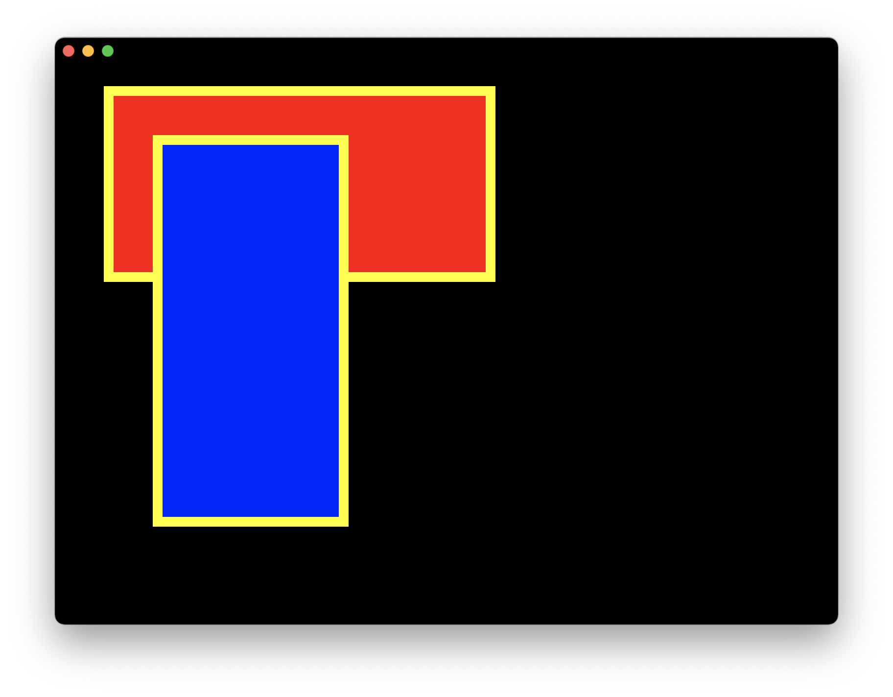

Introduction
Zaplib is an open-source library for speeding up web applications using Rust and WebAssembly. It lets you write high-performance code in Rust, alongside your existing JavaScript code, using simple APIs.
The goal of Zaplib is to make it easy to build performance-intensive applications in the browser. While it is possible to make JavaScript run fast, over time it may become hard to manage lots of optimizations. In Rust you tend to need way fewer optimizations to get to similar or even higher levels of performance, allowing you to focus on actually building stuff.
The idea is to start with your existing web-based codebase, and incrementally move pieces of code over to Zaplib:
- You might start with a small computation;
- then port some 2d/3d rendering;
- then move over some UI elements;
- and so on.
Over time, you could port your entire codebase over to Rust, or you might keep JavaScript and Rust code side-by-side.
At this point Zaplib should be considered in an "alpha" state. It still has quite a few issues, but it's rapidly improving. If you want to use this library in production, please contact us.
Structure
Zaplib roughly consists of these parts:
- Basic APIs. A "standard library" for WebAssembly: console logging, low-level multithreading, HTTP requests, file reading, and so on.
- JS-Rust bridge. Communicating data between JS and Rust.
- Rendering. Low-level GPU-based 2d and 3d rendering APIs, and eventing.
- UI. UI components, layout engine, animation.
Current development is mostly focused on 1-3, and at this point we recommend to keep using JavaScript/CSS for UI elements. But in the future we aim to support building entire applications fully within Zaplib.
The focus of Zaplib is on WebAssembly, but it also runs natively on various systems. This is useful while developing and testing components in isolation, comparable to using Storybook.
Zaplib runs on the following platforms:
- WebAssembly / WebGL. Tested on recent versions of Chrome, Firefox, Edge, and Safari — though there are some known issues.
- Mac OS X / Metal. Tested on 11.6 Big Sur (on Intel mostly).
- Linux / OpenGL. Not well supported; some APIs missing; but should run.
- Windows / DirectX 11. Currently broken.. (sorry!)
There is also a highly experimental feature where we embed a Chromium instance in a desktop build. This is similar to running Rust code alongside JavaScript in a browser using WebAssembly, except that your Rust code runs completely natively instead of in WebAssembly. Rendering is also done natively instead of using WebGL. This is generally more performant, and makes it easier to attach debuggers and profilers. We do not recommend using this in production yet, but it can be useful for debugging.
Team
The open source core team consists of:
JP Posma (Zaplib) |
Steve Krouse (Zaplib) |
 Paras Sanghavi (Cruise) |
 Hernan Saez (Cruise) |
Dmitry Panin (Cruise) |
Also a big shoutout to the Makepad folks, whose open source framework we originally forked and with whom we've had a fruitful collaboration ever since.
License
Zaplib is distributed under the terms of both the MIT license and the Apache License (version 2.0).
See LICENSE-APACHE and LICENSE-MIT in the repo root for details. Third party license notices are available in LICENSES-THIRD-PARTY.
Getting Started
First let's install some dependencies:
- Install Rust
- Clone the repo:
git clone https://github.com/Zaplib/zaplib.git - Navigate to the repo:
cd zaplib - Install the Cargo extension for Zaplib
cargo install cargo-zaplib - Run the dependency installation using Zaplib Cargo tool
cargo zaplib install-deps- If you're going to do local development of Zaplib, be sue to add the
--develflag which installs some more dependencies, like CEF binaries.
- If you're going to do local development of Zaplib, be sue to add the
Now you're ready to run a simple example natively. Here are some fun ones to play with:
cargo run -p example_single_buttoncargo run -p example_chartscargo run -p example_textcargo run -p example_lightning(heavy; best to do a release build; see below)cargo run -p example_bigedit(heavy; best to do a release build; see below)
For a more performant build, add the --release flag, e.g.:
cargo run -p example_single_button --release
Of course, Zaplib is primarily a framework for WebAssembly, so let's run these examples in a browser:
- Download the latest version of a modern browser, like Chrome.
- In a separate terminal window, run a basic server:
zaplib/scripts/server.py(Note that this still requires Python 2). - In another separate terminal window, start yarn to build the Zaplib javascript files:
cd zaplib/web && yarn && yarn watch
- Build one of the examples using the Zaplib Cargo tool, e.g.:
cargo zaplib build -p example_single_button
- Navigate your browser to:
- Again, for a more performant build, add the
--releaseflag, e.g.:cargo zaplib build -p example_single_button --release
- With a release build, add a
?releaseflag to the URL:
Feel free to check out the examples directory for more examples to play with!
To view automatically generated API documentation, run:
zaplib/scripts/build_rustdoc.sh
If you're wondering what to do next, here are some options:
- Set up your tooling.
- Dive into some tutorials.
- Look at the code for one of the examples (
example_single_buttonis a great simple one to start with) and try to modify it.
Basic Tooling
Now that you're able to run some examples, lets set up your development environment.
Editor: VSCode
- We currently recommend using VSCode. In the future we'll add guides for other editors/IDEs.
- After installing VSCode, open up
workspace.code-workspacein the root of the repo. VSCode will prompt you to install our recommended extensions. - We recommend NOT installing the official Rust extension since it conflicts with
matklad.rust-analyzer. If you already have it installed, it's best to disable it. - Feel free to copy the settings from
workspace.code-workspaceto your own projects!
If you go to the "Run and Debug" tab in VSCode, you should see a bunch of preconfigured run profiles at the top of the screen (from CodeLLDB).
Chrome debugging
To get Rust source maps when doing local development in Chrome:
- Install this extension.
- Open Chrome DevTools, click the gear (⚙) icon in the top right corner of DevTools pane, go to the Experiments panel and tick WebAssembly Debugging: Enable DWARF support. (See also this article).
Note that these source maps read from hardcoded local file paths, so they'll only work on the computer that you've compiled on.
Tutorial: Hello World Console
Let's write the most basic application: printing "Hello, world!" to the console.
Either create a new folder in zaplib/examples, or follow along with the existing tutorial_hello_world_console.
First, let's create our Cargo.toml:
[package]
name = "tutorial_hello_world_console"
version = "0.0.1"
edition = "2021"
[dependencies]
zaplib = { path="../../main" }
Now, let's create src/main.rs:
use zaplib::*;
#[derive(Default)]
struct App {}
impl App {
fn new(_cx: &mut Cx) -> Self {
Self::default()
}
fn handle(&mut self, _cx: &mut Cx, event: &mut Event) {
if let Event::Construct = event {
log!("Hello, world!");
}
}
fn draw(&mut self, _cx: &mut Cx) {}
}
main_app!(App);
Let's break it down a bit. The app must be a struct that implement three methods:
new— Returns an initialized struct and any initial state we add. For now, let's call thedefaultimplementation.handle— An entrypoint into Zaplib's event handling system. We will go in depth on various event types in a different tutorial. For now, we'll put ourlog!()call in the theConstructevent.draw— Called when requesting a draw. This will control what gets shown on the application window, which we don't use yet.
The call to main_app!() tells Zaplib to use the App struct for all its eventing and rendering.
This is already enough to run the native version: cargo run -p tutorial_hello_world_console. Hurray! It prints "Hello, world!".
Notice how this program currently never exits on its own. That behavior is similar to the web version, where the program doesn't exit until the browser window is closed. In our case here we don't have a native window yet, so terminate the program using CTRL+C.
WebAssembly
Now let's add an index.html:
<head>
<meta charset="utf-8" />
</head>
<body>
<script type="text/javascript" src="/zaplib/web/dist/zaplib_runtime.js"></script>
<script>
zaplib.initialize({
filename: 'target/wasm32-unknown-unknown/debug/tutorial_hello_world_console.wasm',
defaultStyles: true,
});
</script>
</body>
Compile to WebAssembly: zaplib/scripts/build_wasm.sh -p tutorial_hello_world_console
Be sure to run the server, as described in Getting Started.
Navigate to http://localhost:5000/zaplib/examples/tutorial_hello_world_console, open the browser console, and again, see how it has printed "Hello, world!".
Congratulations, you've written your first Zaplib program! 😄
Tutorial: Hello Thread, Hello File
This tutorial builds on top of the previous Hello World tutorial, by modifying it. Let's do some more stuff.
First, let's replace our "Hello, world!" logging, with spawning some threads:
for i in 0..3 {
universal_thread::spawn(move || {
log!("Hello, world! {i}");
});
}
universal_thread is our abstraction that works just like Rust's std::thread, but with added support for WebAssembly.
When running this (either natively or in WebAssembly), you will see something like:
zaplib/examples/tutorial_hello_world_console/src/main.rs:22 - Hello, world! 2
zaplib/examples/tutorial_hello_world_console/src/main.rs:22 - Hello, world! 0
zaplib/examples/tutorial_hello_world_console/src/main.rs:22 - Hello, world! 1
If you run it multiple times you'll see different orderings, since it's not deterministic which thread prints first.
Notice how relatively easy it was to spawn some threads, and transfer data into them (i), compared with using Web Workers and postMessage! Threading is still fairly advanced Rust, but in our experience, once you've gotten used to it, it ends up quite a bit easier to work with than threading in JavaScript.
Reading files
Let's read some files! In Rust, you would normally use the std::file::File object, but again, that is not available in WebAssembly. So instead, we use our UniversalFile abstraction. We read and print our Cargo.toml file:
// Top of the file:
use std::io::Read;
// Replace the logging code with:
let path = "zaplib/examples/tutorial_hello_world_console/Cargo.toml";
let mut file = UniversalFile::open(path).unwrap();
let mut contents = String::new();
file.read_to_string(&mut contents).unwrap();
log!("Contents of Cargo.toml: {contents}");
This should now print the contents of Cargo.toml, both natively and in WebAssembly.
Note that this is a synchronous API, so it will block further execution. JavaScript typically solves this by using Promises, potentially combined with async and await. In Rust — and native programming in general — we can solve this by instead putting our synchronous code in a thread:
universal_thread::spawn(|| {
let path = "zaplib/examples/tutorial_hello_world_console/Cargo.toml";
let mut file = UniversalFile::open(path).unwrap();
let mut contents = String::new();
file.read_to_string(&mut contents).unwrap();
log!("Contents of Cargo.toml: {contents}");
}
Since we're using a standard API interface, this code will work with any library that accepts a std::io::Read object, as opposed to WebAssembly libraries that expose more exotic asynchronous APIs.
Drag & drop files
Now let's put it all together. This might be a bit overwhelming all at once, but it gives you a glimpse into how various APIs work, such as drawing, event handling, threading, and file reading.
use std::io::Read;
use zaplib::*;
#[derive(Default)]
struct App {
window: Window,
}
impl App {
fn new(_cx: &mut Cx) -> Self {
Self { window: Window { create_add_drop_target_for_app_open_files: true, ..Window::default() } }
}
fn handle(&mut self, _cx: &mut Cx, event: &mut Event) {
if let Event::AppOpenFiles(aof) = event {
// Get a copy of the file handle for use in the thread.
let mut file = aof.user_files[0].file.clone();
universal_thread::spawn(move || {
let mut contents = String::new();
file.read_to_string(&mut contents).unwrap();
log!("Contents of dropped file: {contents}");
});
}
}
fn draw(&mut self, cx: &mut Cx) {
self.window.begin_window(cx);
self.window.end_window(cx);
}
}
main_app!(App);
This code is also in the tutorial_hello_thread example, so you can just run cargo run -p tutorial_hello_thread.
Run this either natively or in WebAssembly, and then drag in a small text file. It should print the contents to the console. Since we did the file reading in a thread, it won't block any other code; though in this example it's hard to tell the difference. 😉
If you're actually going to do file reading, be sure to read up on the std::file::File documentation, since the advice there still applies (e.g. it's often a good idea to wrap things in a BufReader).
API Overview
Universal APIs
For the most part, you can use normal Rust APIs. However, some standard Rust APIs don't work with WebAssembly, so we've built our own cross-platform "universal" APIs.
| Rust API | Universal API | |
|---|---|---|
println! | log! | Logs to the console (with line number). |
thread | universal_thread |
|
Instant | UniversalInstant | elapsed, now, duration_since, checked_add, checked_sub, +, -, +=, -= |
File | UniversalFile |
|
| non-standard | universal_http_stream |
|
| non-standard | universal_rand | random_128 |
Cx & basic events
As you might have seen in Tutorial: Hello World Console, we can get events in our application.
We also have access to a Cx object. This is a global "context" object, that gets passed around practically everywhere.
Here we'll look at the basic calls you can make on Cx, and their associated events. We'll save rendering-related calls and events for a later chapter.
Construction
When the app is constructed and APIs can be called, a Construct event is fired. It is fired exactly once, and before any other calls to handle or draw. The event contains no further information.
Timers
Calling cx.start_timer creates a new Timer object. When the timer fires, a TimerEvent event is dispatched. Use timer.is_timer to check if that event belongs to a particular timer. Use cx.stop_timer to stop it.
Signals
Signals are user-defined events that can be used for anything you want. Create a new Signal object by calling cx.new_signal. Then send it with a StatusId using cx.send_signal (same thread) or Cx::post_signal (any thread). This will trigger a SignalEvent on the main thread (handle and draw are always called on the main thread).
Note that the Signals API is a bit complicated currently; we aim to improve this so you can send any user-defined events.
WebSockets
cx.websocket_send sends a message on a WebSocket. If no WebSocket yet exists for the given URL, a new one is opened. When receiving a message on a WebSocket, a WebSocketMessageEvent is fired.
Focus
If the browser tab or native window gets or loses focus, then AppFocus or AppFocusLost are fired respectively.
User files
This is getting a bit into rendering territory, since we already showed this in a tutorial, we'll cover it here. To create a drop target for the entire window / browser tab, we have to create a Window with create_add_drop_target_for_app_open_files. Then, when dropping a file, an AppOpenFilesEvent event will fire.
There are also events for when a file drag is started, updated, or cancelled.
Profiling
Basic profiling using the console can be done using cx.profile_start and cx.profile_end.
Tutorial: Integrating with JS
This guide will show you how to add Rust code to an existing JavaScript codebase, explaining how to:
- Create a WebAssembly instance and load your Rust code.
- Call functions in Rust and communicate results to JavaScript.
You can either follow this tutorial directly; creating the necessary files from scratch. It's easiest to create your code in the zaplib directory.
Or for a full working example, check out tutorial_js_rust_bridge in the zaplib/examples directory.
Identifying a need
Let's say you have a JavaScript codebase which needs to calculate the sum of all values in an array.
<!-- index.html -->
<html>
<head>
<script type="text/javascript" src="./index.js"></script>
</head>
<body>
<div id="root"></div>
</body>
</html>
// index.js
const values = [1,2,3,4,5,6,7,8,9,10];
const sum = values.reduce((acc, v) => acc + v);
document.getElementById('root').textContent = sum;
This is a contrived example which does not need performance optimization, but importantly, one that locks the entire main thread while calculating results.
There are a few ways to make this better, in order:
- Moving to a promise-based approach with a loading state, so other interactions aren't blocked — this achieves concurrency.
- Moving this computation into a Web Worker — this achieves parallelism and better utilizes multi-core machines.
- Translating this computation to a compiled language (like Rust or C++) and attaching to a browser using WebAssembly — this lets us utilize the performance characteristics of other languages, which are usually better than JavaScript.
Zaplib provides a communication framework to do this last option with a bit more ease than other options today. Let's walk through how.
Serving a WebAssembly binary
Let's start a new Zaplib application! We'll need to create a Rust entrypoint and add some boilerplating so it can compile. After this, we'll show how to actually execute this code.
Additionally, we'll add a basic version of our existing JavaScript logic as Rust code.
// src/main.rs
use zaplib::*;
fn sum() {
// Hardcode the values for now. Later, we'll show how to communicate parameters.
let values = vec![1, 2, 3, 4, 5, 6, 7, 8, 9, 10];
let sum = values.iter().sum();
// Log sum to console. Later, we'll actually return this to JavaScript.
log!(sum);
}
fn call_rust(name: String, _params: Vec<ZapParam>) -> Vec<ZapParam> {
if name == "sum" {
sum();
}
vec![]
}
register_call_rust!(call_rust);
# Cargo.toml
[package]
name = "tutorial_js_rust_bridge"
version = "0.0.1"
edition = "2021"
publish = false
[dependencies]
zaplib = { path="../../main" }
What's new?
We just added a lot, so here are the key things.
src/main.rs
This will be our Rust entrypoint for the package.
use zaplib::*;imports the Zaplib library.register_call_rustlets us register Rust code as callable from JavaScript. The registered function will act on two arguments: anamefield which specifies our input argument from JavaScript, andparamswith any input data. The function returns an output vector. We'll get to that in a bit.
Cargo.toml
This is our package manifest, needed when structuring any Rust application. For more information on basic Rust packaging, see the official Cargo guide. We specify zaplib in the dependencies.
Compiling
Compile this into a WebAssembly binary by calling:
./build_wasm.sh -p tutorial_js_rust_bridge
You'll now see a binary placed in target/wasm32-unknown-unknown/debug/tutorial_js_rust_bridge.wasm.
Serving
To load this file on the Web, we'll need an HTTP server. There's no strict requirement on the backend, as long as:
- The
wasmfile is served with theapplication/wasmMIME type. - CORS headers are set with at least:
Cross-Origin-Opener-Policy: same-origin
Cross-Origin-Embedder-Policy: require-corp
Access-Control-Allow-Origin: *
If you already have the server running per instructions in Getting Started, then great, you can keep using that! If you're interested in a more minimal server example, check out zaplib/examples/tutorial_js_rust_bridge/server.py.
Connecting to web
Now that we have our backend ready, let's write our new JavaScript.
Our existing code is modified to be:
// index.js
zaplib.initialize({
filename: `path/to/target/wasm32-unknown-unknown/debug/tutorial_js_rust_bridge.wasm`,
defaultStyles: true
}).then(() => {
zaplib.callRust('sum');
});
<!-- index.html -->
<html>
<head>
<script type="text/javascript" src="path/to/zaplib_runtime.js"></script>
<script type="text/javascript" src="./index.js"></script>
</head>
<body>
<div id="root"></div>
</body>
</html>
What's new?
zaplib.initialize, with a path to the.wasmfile. This assumes our web server is at the same port that served this HTML.zaplib.callRust, where the first parameter specifies anameof associated logic in Rust.- Importing
zaplib_runtimein our HTML.
Results
Load up the web page — in the console you should see your summed up result. Hooray! Baby steps.
Getting JavaScript inputs in Rust
This approach shows how to trigger Rust code from JavaScript, but is missing fundamentals, notably the ability to pass input or read output. Let's first start with inputs.
Here is our modified code.
// index.js (after zaplib.initialize)
const values = new Uint8Array([1, 2, 3, 4, 5, 6, 7, 8, 9, 10]);
zaplib.callRust('sum', [values]);
// src/main.rs
use zaplib::*;
fn sum(values: &[u8]) {
let sum = values.iter().sum();
// Log sum to console. Later, we'll actually return this to JavaScript.
log!(sum);
}
fn call_rust(name: String, params: Vec<ZapParam>) -> Vec<ZapParam> {
if name == "sum" {
let values = params[0].as_u8_slice();
sum(&values);
}
vec![]
}
register_call_rust!(call_rust);
What's new?
callRust can be passed a second parameter, a list of parameters of arbitrary length. Parameters must be either strings or TypedArrays. In the above case, we're using a Uint8Array.
Our callback in Rust must now read this value, casting the parameter to the correct type. For Uint8Arrays, we can use the as_u8_slice() convenience method for this. Now we can use this like any normal array!
Getting Rust outputs into JavaScript
Outputs work with a similar parameter structure, with the ability to pass both strings and buffers.
Here is our modified code.
// index.js (after zaplib.initialize)
const values = new Uint8Array([1, 2, 3, 4, 5, 6, 7, 8, 9, 10]);
const [sumArray] = await zaplib.callRust('sum', [values]);
const sum = sumArray[0];
document.getElementById('root').textContent = sum;
// src/main.rs
use zaplib::*;
fn sum(values: &[u8]) -> u8 {
values.iter().sum()
}
fn call_rust(name: String, params: Vec<ZapParam>) -> Vec<ZapParam> {
if name == "sum" {
let values = params[0].as_u8_slice();
let response = vec![sum(&values)].into_param();
return vec![response];
}
vec![]
}
register_call_rust!(call_rust);
What's new?
callRust will respond asynchronously with an array of parameters, so our function must now use async/await. We'll populate the first item of this array with our sum, which will be a buffer with one item.
In Rust, our function can now return a vector of results. Note that each result value must be of type ZapParam using the helper into_param().
Conclusion
We now have a web application which uses Zaplib to offload computations to Rust! To reiterate, this solution:
- Has built-in parallelism, since Zaplib computations happen in Web Workers.
- Offers Rust's trademark memory safety and performance.
This solution works well, but still has one big disadvantage regarding performance: copying data. In the above example, our provided Uint8Array will be copied every time this function is called into the WebAssembly memory.
To ensure great performance, we must instead structure our application to share memory across JavaScript and Rust, which we'll talk about in the next tutorial.
Tutorial: Sharing Data
This guide is a followup to the Tutorial: Integrating with JS. It will show you how to avoid copying data when calling across the JavaScript-Rust boundary.
Identifying a need
Let's start with our example from before, with a few modifications. We still want to calculate a sum in WebAssembly, but now we also want to calculate the product using a separate function call.
// index.js (after zaplib.initialize)
const values = new Uint8Array([1, 2, 3, 4, 5, 6, 7, 8, 9, 10]);
const [sumArray] = await zaplib.callRust('sum', [values]);
const sum = sumArray[0];
document.getElementById('root').textContent = sum;
Like in our last guide, this is a contrived example, but one that illustrates a pitfall when repeatedly calling Rust with an input buffer.
Since the input buffer is stored in memory separate from WebAssembly, every call will re-copy it so that our Rust code can read the values. For large enough arrays, this can lead to a significant slowdown.
Zaplib helps you solve this problem by giving you read and write access to Rust-managed memory.
Allocating memory in Rust
Let's first create a Uint8Array that's managed in Rust. Our new code:
// index.js (after zaplib.initialize)
const values = await zaplib.createReadOnlyBuffer(new Uint8Array([1, 2, 3, 4, 5, 6, 7, 8, 9, 10]));
const [sumArray] = await zaplib.callRust('sum', [values]);
const sum = sumArray[0];
document.getElementById('root').textContent = sum;
What's new?
We only change one line above: initializing values using zaplib.createReadOnlyBuffer. This consumes a Uint8Array and copies it into WebAssembly memory, which is Rust-managed.
Reusing the allocated memory.
Let's add to our contrived example, and get both the sum and the product of the values, using two separate calls to callRust:
// src/main.rs
use zaplib::*;
fn sum(values: &[u8]) -> u8 {
values.iter().sum()
}
fn product(values: &[u8]) -> u8 {
values.iter().product()
}
fn call_rust(name: String, params: Vec<ZapParam>) -> Vec<ZapParam> {
if name == "sum" {
let values = params[0].as_u8_slice();
let response = vec![sum(&values)].into_param();
return vec![response];
} else if name == "product" {
let values = params[0].as_u8_slice();
let response = vec![product(&values)].into_param();
return vec![response];
}
vec![]
}
register_call_rust!(call_rust);
// index.js (after zaplib.initialize)
const values = await zaplib.createReadOnlyBuffer(new Uint8Array([1, 2, 3, 4, 5, 6, 7, 8, 9, 10]));
const sum = (await zaplib.callRust('sum', [values]))[0][0];
const product = (await zaplib.callRust('product', [values]))[0][0];
document.getElementById('root').textContent = "sum: " + sum + " product: " + product;
Even though we called callRust multiple times with values, there was no copying of data involved!
Read-Only vs Mutable
The values buffer is read-only, which means that you can safely read from it in JavaScript and Rust at the same time! In fact, you can pass it safely to Rust threads or Web Workers (using zaplib.serializeZapArrayForPostMessage). Zaplib will keep track of where you use the array, so that it gets properly deallocated when you don't use it anymore.
Note that we currently don't enforce that you don't mutate values. There is no built-in way in JavaScript to do that. (In the future we might run periodic checksums on the data in debug builds, to prevent bugs.)
To mutate the data on the JavaScript side, the easiest way is to make a copy of values and call zaplib.createReadOnlyBuffer again. On the Rust side, you can use let new_vec = values.as_vec(); to copy into a new Vec<u8>, and then return that using new_vec.into_param().
It is also possible to mutate data on either side without copying, but that is a more advanced technique with we'll cover in a future tutorial.
API Overview
This is an overview of the different APIs for communicating between JavaScript and Rust.
The Zaplib package on npm has two entrypoints:
zaplib_runtime.js: the main runtime, to be used on the browser's main thread.zaplib_worker_runtime.js: the Web Worker runtime, for use in your workers.
The APIs between these runtimes is mostly the same, but there are some small differences which we will note.
As noted in the Introduction, we also have a highly experimental feature of including Chromium in the native Mac OS X build, using CEF. This gets enabled when compiling zaplib with the cef feature. Generally this is not recommended to use in production yet, but we'll still note its level of support for the different APIs.
Here is an overview of all the JS APIs, and their support with the WebAssembly runtime and the experimental native (CEF) runtime:
| API | browser top-level | browser Web Worker | native top-level | native Web Worker |
|---|---|---|---|---|
| zaplib.initialize | ✅ | — | ✅ | — |
| zaplib.initializeWorker | — | ✅ | — | ⌠|
| zaplib.registerCallJsCallbacks | ✅ | ⌠| ✅ | ⌠|
| zaplib.unregisterCallJsCallbacks | ✅ | ⌠| ✅ | ⌠|
| zaplib.callRust | ✅ | ✅ | ✅ | ⌠|
| zaplib.createReadOnlyBuffer | ✅ | ✅ | ✅ | ⌠|
| zaplib.createMutableBuffer | ✅ | ✅ | ✅ | ⌠|
| zaplib.callRustInSameThreadSync | ⌠| ✅ | ✅ | ⌠|
| zaplib.newWorkerPort | ✅ | ✅ | ⌠| ⌠|
| zaplib.serializeZapArrayForPostMessage | ✅ | ✅ | ⌠| ⌠|
| zaplib.deserializeZapArrayFromPostMessage | ✅ | ✅ | ⌠| ⌠|
| zaplib.jsRuntime | ✅ | ⌠| ✅ | ⌠|
✅ = implemented
⌠= TODO
— = not applicable
Basics
First, make sure to install the npm package and include the main entry point (zaplib_runtime.js).
zaplib.initialize
This initializes the library. A couple of things happen:
- The
.wasmfile is downloaded and compiled. - A Web Worker is created for the main Rust event loop.
- A
<canvas>element spanning the entire page is created and added to<body>. It is transparent and doesn't respond to input events except when actively doing rendering within Rust. But if you need to fully hide it or override styles, use the.zaplib_canvasCSS class. - A
<textarea>element is added to<body>. Again, it only springs into action when necessary. But if you need to fully hide it, use the.zaplib_textareaCSS class. - We add event listeners on the full page to capture events that are relevant for Zaplib.
- We monkey-patch typed array constructors (e.g.
new Uint8Array) andpostMessagecalls to add some additional features. See next chapter for more details.
| Parameter (Typescript) | Description |
|---|---|
initParams.filename: string | Path to the .wasm file. During development, typically something like /target/wasm32-unknown-unknown/debug/my_package_name.wasm. |
initParams.defaultStyles?: boolean | Whether to inject some default styles, including a loading indicator. Useful for examples / getting started. |
| Returns (Typescript) | Description |
|---|---|
Promise<void> | Promise that resolves when you can call other functions. |
Caveats
- Can only be called on the browser's main thread; in a worker use
zaplib.initializeWorker(). filenameis ignored in CEF.
zaplib.callRust
Calls Rust with some parameters. The Rust code gets executed inside the main Rust Web Worker.
| Parameter (Typescript) | Description |
|---|---|
name: string | Some descriptive name of what you want to call. |
params?: (Uint8Array | Float32Array | string)[] | Array of parameters. See next chapter for more details. |
| Returns (Typescript) | Description |
|---|---|
Promise<(Uint8Array | Float32Array | string)[]> | Return parameters. Typed arrays are backed by the WebAssembly memory, and are zero-copy. Strings are always copied. |
On the Rust side, define a function to handle callRust calls using the register_call_rust!() macro:
fn call_rust(name: String, params: Vec<ZapParam>) -> Vec<ZapParam> { ... }
register_call_rust!(call_rust);
Or if you have an application struct which you need access to, use cx.on_call_rust():
impl ExampleApp {
fn new(cx: &mut Cx) -> Self {
cx.on_call_rust(Self::on_call_rust);
Self {}
}
fn on_call_rust(
&mut self,
cx: &mut Cx,
name: String,
params: Vec<ZapParam>
) -> Vec<ZapParam> {}
}
ZapParam matches the type of parameter that was pass in on the JS side. Get out the actual data using an as_* or into_* helper function. Similarly, return data by turning it into a ZapParam using the into_param on a supported type. For example, for converting to and from Strings:
fn call_rust(name: String, params: Vec<ZapParam>) -> Vec<ZapParam> {
// Converting to a string, and printing it:
log!("String value: {}", params[0].as_str());
return vec!["Return value".to_string().into_param()];
}
For more information about the parameter types, see the next chapter.
zaplib.createReadOnlyBuffer & zaplib.createMutableBuffer
Use these functions to allocate raw data on the WebAssembly heap. These are convenience functions that have the same effect as calling zaplib.callRust with non-Zaplib-backed typed arrays and immediately returning them.
Note that when called on the browser's main thread, these calls are asynchronous (they return a Promise), while within Web Workers they are synchronous. In the future, we would like to make them synchronous in both cases.
zaplib.registerCallJsCallbacks & zaplib.unregisterCallJsCallbacks
In order to call JS from Rust — e.g. in response to an event — you can register callbacks on the JS side, using zaplib.registerCallJsCallbacks. An example:
zaplib.registerCallJsCallbacks({
log(params) {
console.log("log fn called", params[0]);
},
});
Then, in Rust, use: cx.call_js("log", vec!["Hello, World!".to_string().into_param()]), similarly to returning params from call_rust.
Currently these calls are one-way; it is not possible to directly return values. In order to do that, make a separate call to zaplib.callRust.
In order to unregister callbacks, use e.g. zaplib.unregisterCallJsCallbacks(["log"]);.
Types of Parameters
These are all the types of parameters that can be sent over the JS-Rust bridge:
| ZapParam::String | |
| Most common for small JSON-serialized data (e.g. using Serde). | |
| Create in JS | "Hello, world!" |
| Type in Rust | String |
| Returned to JS | String |
| Borrowing data | as_str() -> &str |
| Transferring ownership | into_string() -> String |
| Caveats | Data is copied when passed over the bridge. |
| ZapParam::ReadOnlyU8Buffer | |
| Most common for large serialized data. | |
| Create in JS | zaplib.createReadOnlyBuffer(new Uint8Array([1, 2, 3])) |
| Type in Rust | Arc<Vec<u8>> |
| Returned to JS | ZapTypedArray (extends Uint8Array) |
| Borrowing data | as_u8_slice() -> &[u8] |
| Adding ownership (refcount) | as_arc_vec_u8() -> Arc<Vec<u8>> |
| Caveats | No enforcement of read-only on JS side (yet). |
| ZapParam::ReadOnlyF32Buffer | |
| Most common for graphics data. | |
Same as above, but instead with f32 and Float32Array. | |
| ZapParam::MutableU8Buffer | |
| Less common. | |
| Create in JS | zaplib.createMutableBuffer(new Uint8Array([1, 2, 3])) |
| Type in Rust | Vec<u8> |
| Returned to JS | ZapTypedArray (extends Uint8Array) |
| Borrowing data | as_u8_slice() -> &[u8] |
| Transferring ownership | into_vec_u8() -> Vec<u8> |
| Caveats | Once passed from JS to Rust, the data cannot be used on the JS side any more (neither reading nor writing); representing transfer of ownership to Rust. This is not enforced (yet). |
| ZapParam::MutableF32Buffer | |
| Less common. | |
Same as above, but instead with f32 and Float32Array. | |
As noted in the caveats above, you must take care when using these buffers on the JavaScript side:
- Read-only buffers should not be mutated in JS. If you do mutate them anyway, race conditions and data corruption can occur. This restriction is not enforced (yet).
- Mutable buffers can be mutated in JS. However, once you pass a mutable buffer into Rust, you cannot use the buffer in JS in any way. This is because ownership is passed to Rust, which can now mutate the data. If you read from such a stale buffer in JS, race conditions and data corruption can occur. This restriction is not enforced (yet).
- It is possible to mutate some data in JS, then in Rust, and then in JS again, without ever copying of the data. Just pass the mutable buffer back from Rust to JS when you're done with it.
When a u8 or f32 buffer is returned to JS, you get a ZapTypedArray:
- This extends either
Uint8ArrayorFloat32Array. - This typed array is backed by the WebAssembly memory.
- When the typed array gets garbage collected, the WebAssembly memory is updated accordingly (the refcount is decreased for read-only buffers; and the memory is freed for mutable buffers).
- This does mean that if you want to pass such a typed array to a Web Worker, that you have to use
zaplib.serializeZapArrayForPostMessage. If you don't, the data might get de- or re-allocated before you can use it.- This is enforced by monkey-patching
postMessagewhen you callzaplib.initialize(), so don't worry too much about it.
- This is enforced by monkey-patching
- It is possible to call
subarray()on these typed arrays, and the garbage collection be tracked properly.- It is even possible to create a new typed array using
new Uint8Array(zapArray.buffer, zapArray.byteOffset, zapArray.length), and the garbage collection will still be tracked properly! - This makes it possible to pass these typed arrays into most existing libraries.
- However, it's not possible to pass a sub-slice of a typed array to Rust.
- It is even possible to create a new typed array using
When sending small amounts of data in either direction, we recommend simply JSON-serializing the data and sending it as a string. On the Rust side, Serde is a fine library for this.
Futher note that when using CEF, data is often copied anyway, even when in the WebAssembly version it is not. This is one of the reasons why we do not recommend using CEF yet.
Web Workers
Zaplib can also be used inside of your own Web Workers. This comes with both some extra features, as well as some caveats.
First, include the Web Worker entry point (zaplib_worker_runtime.js).
Note that when using CEF we don't support any of these functions yet.
zaplib.newWorkerPort & zaplib.initializeWorker
In order to use Zaplib inside Web Workers, we first have to create a "worker port" on the main thread, using zaplib.newWorkerPort(). Send that port to the Web Worker using whatever postMessage mechanism you already use. Be sure to add the port to the list of transferables. Example:
const zapWorkerPort = zaplib.newWorkerPort();
myWorker.postMessage(zapWorkerPort, [zapWorkerPort]);
Within the Web Worker, receive this port, and call zaplib.initializeWorker(zapWorkerPort). Just like zaplib.initialize this returns a Promise indicating when you can call other functions on zaplib. Under the hood, we do the following:
- A cached, compiled version of the main
.wasmfile is loaded and instantiated. - A thread-specific stack and thread-local storage are allocated and initialized.
- Shared WebAssembly memory is mounted.
In the worker, the code would look something like this:
self.onmessage = function(e) {
const zapWorkerPort = e.data;
zaplib.initializeWorker(zapWorkerPort).then(() => {
// actual code here.
});
};
zaplib.serializeZapArrayForPostMessage & zaplib.deserializeZapArrayFromPostMessage
When a Zaplib-managed typed array gets garbage collected, the WebAssembly memory is updated accordingly (the refcount is decreased for read-only buffers; and the memory is freed for mutable buffers). This does mean that if you want to pass such a typed array to a Web Worker, that you have to use zaplib.serializeZapArrayForPostMessage. If you don't, the data might get de- or re-allocated before you can use it.
Note that this is enforced by monkey-patching postMessage when you call zaplib.initialize() or zaplib.initializeWorker, so don't worry about getting this wrong.
- Zaplib-managed typed arrays are those returned by
zaplib.createReadOnlyBuffer,zaplib.callRust, and so on. - When sending a Zaplib-managed over
postMessage, just wrap it inzaplib.serializeZapArrayForPostMessage(). - On the other side of the
postMessageinterface, get back a Zaplib-managed typed array by callingzaplib.deserializeZapArrayFromPostMessage(). - Both of these methods are synchronous.
zaplib.callRustInSameThreadSync
In Web Workers we also support calling Rust within that very thread. This means that execution transfers from JS to Rust, and no other processing can happen until the function returns. It also means that no Promises are involved; it's purely synchronous code.
To register a callback, you have to use cx.on_call_rust_in_same_thread_sync(). However, the callback function has no access to the application struct, nor to Cx itself:
impl ExampleApp {
fn new(cx: &mut Cx) -> Self {
cx.on_call_rust_in_same_thread_sync(Self::on_call_rust_in_same_thread_sync);
Self {}
}
fn on_call_rust_in_same_thread_sync(
name: String,
params: Vec<ZapParam>
) -> Vec<ZapParam> {}
}
On the JS side, call zaplib.callRustInSameThreadSync(). This has the same function signature as zaplib.callRust, except that its results are not wrapped in a Promise.
Tutorial: Hello World Canvas
Let's build a simple Zaplib application that draws "Hello, World!" on the screen.
First we create a Cargo.toml file with the Zaplib dependency:
[package]
name = "tutorial_hello_world_canvas"
version = "0.0.1"
edition = "2021"
[dependencies]
zaplib = { path="../../main" }
In src/main.rs, we need to define a main app to draw from:
#[derive(Default)]
struct App {
}
impl App {
fn new(cx: &mut Cx) -> Self {
Self::default()
}
fn handle(&mut self, cx: &mut Cx, event: &mut Event) {
}
fn draw(&mut self, cx: &mut Cx) {
}
}
main_app!(App);
Just like in Tutorial: Hello World Console, the App implements 3 main functions: new, handle, and draw. Next we create a window with some text in the draw function:
fn draw(&mut self, cx: &mut Cx) {
self.window.begin_window(cx);
self.pass.begin_pass(cx, Vec4::color("0"));
self.view.begin_view(cx, LayoutSize::FILL);
cx.begin_padding_box(Padding::vh(50., 50.));
TextIns::draw_walk(cx, "Hello, World!", &TextInsProps::default());
cx.end_padding_box();
self.view.end_view(cx);
self.pass.end_pass(cx);
self.window.end_window(cx);
}
windowrefers to the main desktop or browser window.passrefers to our rendering context. We specify a black background — we can use any hex color here.viewrefers to our layout. We provide aFILLlayout, which translates to 100% of the available width and height.begin_padding_boxadds a padding so that text doesn't overlap with the native window buttons.TextInsis Zaplib's implementation for text rendering. We pass in our desired string and any formatting properties. We'll stick with default formatting for now.
Add the relevant state to App:
#[derive(Default)]
struct App {
window: Window,
pass: Pass,
view: View,
}
You can run this full example with Cargo:
cargo run -p tutorial_hello_world_canvas

Congratulations! You just did your first rendering in Zaplib. In the next tutorial we will cover how to do 2D rendering.
Tutorial: Rendering 2D Shapes
Now that we've put Hello World on the screen, let's draw some more interesting shapes.
Step 1: Render colored rectangle
A shader is a type of program that runs on the GPU. Typically the process of rendering using shaders goes through multiple stages:
- Geometry Definition — defining the base geometry figure, which can be as simple as a rectangle or as complex as a teapot (which we'll look at in Tutorial: Rendering 3D Meshes).
- Vertex Shader — transforming the geometry's coordinates into screen coordinates.
- Rasterization — determining which pixels are inside the figure.
- Pixel Shader — computing the color of each pixel inside the rasterized figure.
- Instancing — repeat the above process for multiple instances of the same geometry, with some different instance-specific variables each time (like color or position).
See Learn OpenGL for an example how this works in OpenGL.
Now let's go through the process of creating our own shader using Zaplib. First, write a function that builds a geometry:
fn build_geom() -> Geometry {
let vertex_attributes = vec![
// top left vertex
vec2(0., 0.),
// top right vertex
vec2(1., 0.),
// bottom right vertex
vec2(1., 1.),
// bottom left vertex
vec2(0., 1.),
];
let indices = vec![
// top-right triangle
[0, 1, 2],
// bottom-left triangle
[2, 3, 0],
];
Geometry::new(vertex_attributes, indices)
}
This function defines 2 adjacent triangles that form a rectangle.
Define a SHADER object:
static SHADER: Shader = Shader {
build_geom: Some(build_geom),
code_to_concatenate: &[
Cx::STD_SHADER,
code_fragment!(
r#"
geometry geom: vec2;
instance color: vec4;
fn vertex() -> vec4 {
return vec4(geom.x, geom.y, 0., 1.);
}
fn pixel() -> vec4 {
return color;
}
"#
),
],
..Shader::DEFAULT
};
code_to_concatenateis the custom code assigned to the shader. We addCx::STD_SHADERas a first argument which is a standard library of shaders within Zaplib.geometryis a qualifier that defines the data passed frombuild_geomoutput. Since ourvertex_attributesinbuild_geomconsist ofVec2objects, we define it as such here.instanceis a qualifier that defines an instance-specific variable — more about that later.coloris used to define which color to use for rectangle.fn vertex()defines the vertex shader. This gets called for each vertex returned frombuild_geom, withgeomgetting set to the corresponding point. It returnsvec4(x, y, z, w)where the values mean the following:x, y— coordinates on the screen (from -1 to 1).z— draw order (from 0 to 1). Draws with higherzwill be on top.w— normalization parameter. Not very important for now, so we'll set it currently to 1.0.
fn pixel()defines the pixel shader. Since we are not drawing any special shapes yet, we'll set every pixel to the same color. The pixel shader is called once for each pixel in the output image.
Define the struct to pass the color into the shader as an instance variable:
#[derive(Clone)]
#[repr(C)]
struct RectIns {
color: Vec4,
}
Now we can combine all of this together and use the following draw function in our application:
fn draw(&mut self, cx: &mut Cx) {
self.window.begin_window(cx);
self.pass.begin_pass(cx, Vec4::color("0"));
self.view.begin_view(cx, LayoutSize::FILL);
let color = vec4(1., 0., 0., 1.);
cx.add_instances(&SHADER, &[RectIns { color }]);
self.view.end_view(cx);
self.pass.end_pass(cx);
self.window.end_window(cx);
}
let colordefines the red color.cx.add_instancestakes a shader and passes theMyInsdata into it. Under the hood this creates a new "draw call".
You can run this full example with Cargo:
cargo run -p tutorial_2d_rendering_step1

Note: the coordinates of vertices returned from vertex() shader are in [0; 1] range, while the window canvas uses [-1; 1]. That's why we see a red rectangle covering only a quarter of the window. In the next section we'll see how to draw with pixel coordinates.
Step 2: Render multiple bordered rectangles
Now let's modify our example to draw 2 bordered rectangles of the given sizes on top of each other.
Modify RectIns to include the top-left position of rectangle and its size:
#[derive(Clone)]
#[repr(C)]
struct RectIns {
color: Vec4,
rect_pos: Vec2,
rect_size: Vec2,
}
Update the shader code:
r#"
geometry geom: vec2;
instance color: vec4;
instance rect_pos: vec2;
instance rect_size: vec2;
varying pos: vec2;
fn vertex() -> vec4 {
let point = geom * rect_size + rect_pos;
pos = (point - rect_pos) / rect_size;
return camera_projection * camera_view * vec4(point.x, point.y, 0., 1.);
}
fn pixel() -> vec4 {
let border = 10.;
let pt = pos * rect_size;
if pt.x < border || pt.y < border || pt.x > rect_size.x - border || pt.y > rect_size.y - border {
return vec4(1., 1., 0., 1.0);
}
return color;
}
"#
instancevariablescolor,rect_pos,rect_sizedefine the data passed into the shader. They must be in the same order as the fields of theRectInsstruct.varying posdefines a local variable that gets passed fromvertex()shader to thepixel()shader.- Inside
vertex()we transform the geometry points to absolute coordinates of the rectangle to draw. In the end we applycamera_projectionandcamera_view, which are helper structs built into Zaplib that transform the absolute coordinates in pixels on the screen to[-1; 1]range. - Inside
pixel()we define a 10 pixel border and return yellow for the pixels within that border, andcolorfor other pixels in that rectangle.
Finally, update the draw function to pass the new RectIns struct with new colors and positions of rectangles to draw:
fn draw(&mut self, cx: &mut Cx) {
self.window.begin_window(cx);
self.pass.begin_pass(cx, Vec4::color("0"));
self.view.begin_view(cx, LayoutSize::FILL);
let rect1 = RectIns { color: vec4(1., 0., 0., 1.), rect_pos: vec2(50., 50.), rect_size: vec2(400., 200.) };
let rect2 = RectIns { color: vec4(0., 0., 1., 1.), rect_pos: vec2(100., 100.), rect_size: vec2(200., 400.) };
cx.add_instances(&SHADER, &[rect1, rect2]);
self.view.end_view(cx);
self.pass.end_pass(cx);
self.window.end_window(cx);
}
You can run this full example with Cargo:
cargo run -p tutorial_2d_rendering_step2

Step 3: Using QuadIns
Drawing rectangles is very common in graphics, so Zaplib provides a convenient QuadIns struct. Let's use it in our latest example.
Update the SHADER definition:
static SHADER: Shader = Shader {
build_geom: Some(QuadIns::build_geom),
code_to_concatenate: &[
Cx::STD_SHADER,
QuadIns::SHADER,
code_fragment!(
r#"
instance color: vec4;
fn pixel() -> vec4 {
let border = 10.;
let pt = pos * rect_size;
if pt.x < border || pt.y < border || pt.x > rect_size.x - border || pt.y > rect_size.y - border {
return vec4(1., 1., 0., 1.0);
}
return color;
}
"#
),
],
..Shader::DEFAULT
};
- Pass in the
QuadIns::build_geomfunction — it is identical to thebuild_geomfunction we defined above! - Prefix the shader with
QuadIns::SHADER. This defines avertex()shader, so we can remove that code. - We can remove
geom,rect_pos,rect_size, andpos, since those are also defined insideQuadIns::SHADER.
Update RectIns to use QuadIns instead of rect_pos and rect_size:
#[repr(C)]
struct RectIns {
quad: QuadIns,
color: Vec4,
}
We put quad on top to match the order in which shaders are concatenated above
Finally, change the draw function to pass new RectIns objects to the add_instances calls:
fn draw(&mut self, cx: &mut Cx) {
self.window.begin_window(cx);
self.pass.begin_pass(cx, Vec4::color("0"));
self.view.begin_view(cx, LayoutSize::FILL);
let rect1 = RectIns {
quad: QuadIns { rect_pos: vec2(50., 50.), rect_size: vec2(400., 200.), draw_depth: 0. },
color: vec4(1., 0., 0., 1.),
};
let rect2 = RectIns {
quad: QuadIns { rect_pos: vec2(100., 100.), rect_size: vec2(200., 400.), draw_depth: 0. },
color: vec4(0., 0., 1., 1.),
};
cx.add_instances(&SHADER, &[rect1, rect2]);
self.view.end_view(cx);
self.pass.end_pass(cx);
self.window.end_window(cx);
}
You can run this full example with Cargo:
cargo run -p tutorial_2d_rendering_step3
The output hasn't changed:
This is what the full code looks like:
use zaplib::*;
#[repr(C)]
struct RectIns {
quad: QuadIns,
color: Vec4,
}
static SHADER: Shader = Shader {
build_geom: Some(QuadIns::build_geom),
code_to_concatenate: &[
Cx::STD_SHADER,
QuadIns::SHADER,
code_fragment!(
r#"
instance color: vec4;
fn pixel() -> vec4 {
let border = 10.;
let pt = pos * rect_size;
if pt.x < border || pt.y < border || pt.x > rect_size.x - border || pt.y > rect_size.y - border {
return vec4(1., 1., 0., 1.0);
}
return color;
}
"#
),
],
..Shader::DEFAULT
};
#[derive(Default)]
struct App {
window: Window,
pass: Pass,
view: View,
}
impl App {
fn new(_cx: &mut Cx) -> Self {
Self::default()
}
fn handle(&mut self, _cx: &mut Cx, _event: &mut Event) {}
fn draw(&mut self, cx: &mut Cx) {
self.window.begin_window(cx);
self.pass.begin_pass(cx, Vec4::color("0"));
self.view.begin_view(cx, LayoutSize::FILL);
let rect1 = RectIns {
quad: QuadIns { rect_pos: vec2(50., 50.), rect_size: vec2(400., 200.), draw_depth: 0. },
color: vec4(1., 0., 0., 1.),
};
let rect2 = RectIns {
quad: QuadIns { rect_pos: vec2(100., 100.), rect_size: vec2(200., 400.), draw_depth: 0. },
color: vec4(0., 0., 1., 1.),
};
cx.add_instances(&SHADER, &[rect1, rect2]);
self.view.end_view(cx);
self.pass.end_pass(cx);
self.window.end_window(cx);
}
}
main_app!(App);
Rendering 3D Meshes
This guides will walk through the rendering API provided by Zaplib. We'll go through a few steps:
- Start with a JavaScript application, which extracts a geometry from an STL file and renders it using ThreeJS and GLSL shaders.
- Move our STL loading logic into Zaplib and communicate results using Web Workers.
- Render using Zaplib.
This guide assumes an understanding of JavaScript web development, basic 3D graphics, and writing GPU shaders using a shading language (such as GLSL/HLSL).
You can either follow this tutorial directly; creating the necessary files from scratch, or read the working incremental versions of each step, located in zaplib/examples/tutorial_3d_rendering/. To start from scratch, copy zaplib/examples/tutorial_3d_rendering/step1 into a new directory at the top level of the zaplib repository called tutorial_3d_rendering.
Step 1: Rendering a mesh in ThreeJS
This guide starts with a working 3D visualization in JavaScript, which renders an example using the popular ThreeJS library. Let's take a look at our existing files.
Our index.html looks like the following:
<head>
<meta charset="utf-8" />
</head>
<body>
<script type="module" src="index.js"></script>
<div id="root" style="height: 100%; width: 100%;"></div>
</body>
In it, we define a top level full-page div with an id of root. We load index.js as well, reproduced below. Afterward, we'll go through its important pieces.
index.js
import * as THREE from 'https://cdn.skypack.dev/three@v0.135.0';
import { OrbitControls } from 'https://cdn.skypack.dev/three@v0.135.0/examples/jsm/controls/OrbitControls'
const loadSTLIntoGeometry = async (assetUrl) => {
const buffer = await fetch(assetUrl).then(r => r.arrayBuffer());
const data = new DataView(buffer);
const HEADER_LENGTH = 80;
const numTriangles = data.getUint32(HEADER_LENGTH, true);
const vertices = new Float32Array(numTriangles * 9);
const normals = new Float32Array(numTriangles * 9);
for (let i = 0; i < numTriangles; i++) {
const offset = HEADER_LENGTH + 4 + i * 50;
const normalX = data.getFloat32(offset, true);
const normalY = data.getFloat32(offset + 4, true);
const normalZ = data.getFloat32(offset + 8, true);
for (let j = i * 9, k = 0; k < 36; j += 3, k += 12) {
vertices[j] = data.getFloat32(offset + 12 + k, true);
vertices[j + 1] = data.getFloat32(offset + 16 + k, true);
vertices[j + 2] = data.getFloat32(offset + 20 + k, true);
normals[j] = normalX;
normals[j + 1] = normalY;
normals[j + 2] = normalZ;
}
}
const geometry = new THREE.BufferGeometry();
geometry.attributes.position = new THREE.BufferAttribute(vertices, 3);
geometry.attributes.normal = new THREE.BufferAttribute(normals, 3);
geometry.attributes.offset = new THREE.InstancedBufferAttribute(new Float32Array([-10, 0, 10]), 1);
geometry.attributes.color = new THREE.InstancedBufferAttribute(new Float32Array([1, 1, 0, 0, 1, 1, 1, 0, 1]), 3);
return geometry;
}
const material = new THREE.ShaderMaterial({
vertexShader: `
varying vec3 vPos;
varying vec3 vNormal;
varying vec3 vColor;
attribute float offset;
attribute vec3 color;
void main() {
vPos = position;
vNormal = normal;
vColor = color;
gl_Position = projectionMatrix * modelViewMatrix * vec4(vec3(position.x, position.y + offset, position.z),1.0);
}
`,
fragmentShader: `
varying vec3 vPos;
varying vec3 vNormal;
varying vec3 vColor;
void main() {
vec3 lightPosition = vec3(20.,0.,30.);
vec3 lightDirection = normalize(vPos.xyz - lightPosition);
gl_FragColor = vec4(clamp(dot(-lightDirection, vNormal), 0.0, 1.0) * vColor,1.0);
}
`,
});
const init = async () => {
const div = document.getElementById("root");
const scene = new THREE.Scene();
const camera = new THREE.PerspectiveCamera(40, div.offsetWidth / div.offsetHeight, 0.1, 1000);
camera.position.set(0, -30, 30);
const renderer = new THREE.WebGLRenderer();
renderer.setPixelRatio(window.devicePixelRatio);
renderer.setSize(div.offsetWidth, div.offsetHeight);
div.appendChild(renderer.domElement);
const controls = new OrbitControls(camera, renderer.domElement);
const render = () => {
renderer.render(scene, camera);
}
const geometry = await loadSTLIntoGeometry("/zaplib/examples/tutorial_rendering/teapot.stl");
const mesh = new THREE.InstancedMesh(geometry, material, 3);
scene.add(mesh);
function animate() {
requestAnimationFrame(animate);
render();
}
animate();
}
init();
This renders ThreeJS to the root div, which displays our 3D scene.
Let's focus on what is happening in the init function.
First we have our ThreeJS boilerplating.
const div = document.getElementById("root");
const scene = new THREE.Scene();
const camera = new THREE.PerspectiveCamera(40, div.offsetWidth / div.offsetHeight, 0.1, 1000);
camera.position.set(0, -30, 30);
const renderer = new THREE.WebGLRenderer();
renderer.setPixelRatio(window.devicePixelRatio);
renderer.setSize(div.offsetWidth, div.offsetHeight);
div.appendChild(renderer.domElement);
const controls = new OrbitControls(camera, renderer.domElement);
const render = () => {
renderer.render(scene, camera);
}
This does the following:
- Defines a new 3D scene, rendering results to our supplied
div. - Defines a camera using a perspective projection, a field of view of 40, and a near/far z-axis of 0.1 and 1000. These numbers are not specifically important, but they are the defaults in Zaplib's Viewport, which we'll see later.
- Sets up OrbitControls, which lets us pan and zoom around our scene easily. OrbitControls by default lets us use the left mouse button to rotate the camera around the origin (0,0,0) while maintaining camera distance, and the right mouse button to pan around the scene freely.
Defining geometry
const geometry = await loadSTLIntoGeometry("/zaplib/examples/tutorial_rendering/teapot.stl");
const mesh = new THREE.InstancedMesh(geometry, material, 3);
scene.add(mesh);
This defines a ThreeJS InstancedMesh using a custom geometry and material. We supply an instance count of 3, meaning that we will be rendering our model three times, with some custom properties per instance.
The geometry is loaded from a remote STL file using loadSTLIntoGeometry, let's take a look at that.
const loadSTLIntoGeometry = async (assetUrl) => {
const buffer = await fetch(assetUrl).then(r => r.arrayBuffer());
const data = new DataView(buffer);
const HEADER_LENGTH = 80;
const numTriangles = data.getUint32(HEADER_LENGTH, true);
const vertices = new Float32Array(numTriangles * 9);
const normals = new Float32Array(numTriangles * 9);
for (let i = 0; i < numTriangles; i++) {
const offset = HEADER_LENGTH + 4 + i * 50;
const normalX = data.getFloat32(offset, true);
const normalY = data.getFloat32(offset + 4, true);
const normalZ = data.getFloat32(offset + 8, true);
for (let j = i * 9, k = 0; k < 36; j += 3, k += 12) {
vertices[j] = data.getFloat32(offset + 12 + k, true);
vertices[j + 1] = data.getFloat32(offset + 16 + k, true);
vertices[j + 2] = data.getFloat32(offset + 20 + k, true);
normals[j] = normalX;
normals[j + 1] = normalY;
normals[j + 2] = normalZ;
}
}
const geometry = new THREE.BufferGeometry();
geometry.attributes.position = new THREE.BufferAttribute(vertices, 3);
geometry.attributes.normal = new THREE.BufferAttribute(normals, 3);
geometry.attributes.offset = new THREE.InstancedBufferAttribute(new Float32Array([-10, 0, 10]), 1);
geometry.attributes.color = new THREE.InstancedBufferAttribute(new Float32Array([1, 1, 0, 0, 1, 1, 1, 0, 1]), 3);
return geometry;
}
Without going line by line here, the function does the following:
- Fetch a remote asset and load its result into an ArrayBuffer. We'll be rendering a Utah teapot - by default this will be available in
zaplib/examples/tutorial_3d_rendering/. - Read through the buffer, extracting information for each triangle one by one. See the binary STL spec here for information about its structure. We load each vertex and its corresponding normal into Float32Arrays.
- Define a new ThreeJS BufferGeometry and create new attributes to define its shapes.
- The extracted position and normal data is loaded in as BufferAttributes.
- We give each instance a y-axis offset, represented as floats, and load it as InstanceBufferAttribute.
- We give each instance a color, represented as RGB values, and load it as an InstancedBufferAttribute.
Our mesh's material is specified using a ShaderMaterial, and aims to provide very basic lighting with a fixed point light.
The vertex shader saves our position and normal as varying parameters to be used in the fragment shader, and converting our position from world coordinates to screen coordinates. We apply our instance offset value to get a final position.
varying vec3 vPos;
varying vec3 vNormal;
varying vec3 vColor;
attribute float offset;
attribute vec3 color;
void main() {
vPos = position;
vNormal = normal;
vColor = color;
gl_Position = projectionMatrix * modelViewMatrix * vec4(vec3(position.x, position.y + offset, position.z),1.0);
}
The fragment shader specifies a fixed light source and calculates pixel color by multiplying our instance color and light intensity, using the dot product of the light direction and normal vector. We clamp light intensity between 0 and 1.
varying vec3 vPos;
varying vec3 vNormal;
varying vec3 vColor;
void main() {
vec3 lightPosition = vec3(20.,0.,30.);
vec3 lightDirection = normalize(vPos.xyz - lightPosition);
gl_FragColor = vec4(clamp(dot(-lightDirection, vNormal), 0.0, 1.0) * vColor,1.0);
}
Great! Running the example, we see our 3D scene with rudimentary lighting and pan/zoom controls with the mouse. There is a delay between page loading and scene rendering, due to our STL extraction code.
Step 2: STL extraction in Rust
WebAssembly and Rust are most useful for expensive operations, so let's offload STL extraction from JavaScript there and look at the tradeoffs. At a high level, this means:
- performing STL extraction using a Web Worker and therefore parallel to our main thread
- performing our network request for the STL file in Rust
- communicating our result buffer back to JavaScript
As a reminder, a working example at the end of this step is available in zaplib/examples/tutorial_3d_rendering/step2.
Instantiate a new Zaplib project
This structure is further explained in previous tutorials. We'll need:
- a
Cargo.tomlfile with the Zaplib dependency.
[package]
name = "tutorial_3d_rendering"
version = "0.0.1"
edition = "2018"
[dependencies]
zaplib = { path = "../zaplib/main" }
- and a Zaplib entrypoint for WebAssembly, in
src/main.rs.
use zaplib::*;
fn call_rust(_name: String, _params: Vec<ZapParam>) -> Vec<ZapParam> {
vec![]
}
register_call_rust!(call_rust);
Port STL loading to Rust
Add a function to src/main.rs for STL loading. We can mirror the algorithm we have in JavaScript. Here's what that looks like:
fn parse_stl() -> Vec<ZapParam> {
let mut file = UniversalFile::open("zaplib/examples/tutorial_3d_rendering/teapot.stl").unwrap();
let mut data = vec![];
file.read_to_end(&mut data).unwrap();
const HEADER_LENGTH: usize = 80;
let num_triangles = get_u32_le(&data, HEADER_LENGTH) as usize;
let mut vertices = Vec::with_capacity(num_triangles * 9);
let mut normals = Vec::with_capacity(num_triangles * 9);
for i in 0..num_triangles {
let offset = HEADER_LENGTH + 4 + i * 50;
let normal_x = get_f32_le(&data, offset);
let normal_y = get_f32_le(&data, offset + 4);
let normal_z = get_f32_le(&data, offset + 8);
for j in (0..36).step_by(12) {
vertices.push(get_f32_le(&data, offset + 12 + j));
vertices.push(get_f32_le(&data, offset + 16 + j));
vertices.push(get_f32_le(&data, offset + 20 + j));
normals.push(normal_x);
normals.push(normal_y);
normals.push(normal_z);
}
}
vec![vertices.into_param(), normals.into_param()]
}
This code looks mostly the same; here are a few notable differences:
- We make a web request and read to a file using Zaplib's
UniversalFileAPI. - We use Zaplib's performant
byte_extractmodule to read data. This must be imported by addinguse zaplib::byte_extract::{get_f32_le, get_u32_le};. The module provides both little endian and big endian extraction functions for different primitive types. - We use the
into_param()helper to convert Float32 vectors into params we can return to JavaScript.
We then integrate this to call_rust:
fn call_rust(name: String, _params: Vec<ZapParam>) -> Vec<ZapParam> {
if name == "parse_stl" {
parse_stl()
} else {
panic!("Unknown function name");
}
}
To build, run:
./scripts/build_wasm.sh -p tutorial_3d_rendering
Calling from JS
To call this function from our JavaScript, let's add the Zaplib dependency to index.html. Add a line in the <body> section:
<script type="text/javascript" src="/zaplib/web/dist/zaplib_runtime.js"></script>
Then, modify loadSTLIntoGeometry to replace our JavaScript parsing code.
const loadSTLIntoGeometry = async (assetUrl) => {
await zaplib.initialize({ filename: '/target/wasm32-unknown-unknown/debug/tutorial_3d_rendering.wasm' });
const [vertices, normals] = await zaplib.callRust("parse_stl");
const geometry = new THREE.BufferGeometry();
geometry.attributes.position = new THREE.BufferAttribute(vertices, 3);
geometry.attributes.normal = new THREE.BufferAttribute(normals, 3);
return geometry;
}
A few key changes:
- We call
zaplib.initializewith the location of our built WebAssembly binary. zaplib.callRustreturns our vertices and normals already as Float32Arrays, which we can plug into ThreeJS.
Great! Now let's run the example in the browser. There should be no difference in the behavior and things will load as normal, without blocking our main browser thread.
Step 3 - Rendering in Zaplib
In addition to processing tasks, we can also render to the DOM directly from Rust using Zaplib. We can draw UI primitives as well as a full 3D Viewport, which will get output to a canvas element on our webpage.
For an introduction to basic rendering, take a look at Tutorial: Hello World Canvas. Just like in that tutorial, let's create a basic Zaplib application. Here is how our Rust code should look at this point:
#[derive(Default)]
struct App {
window: Window,
pass: Pass,
view: View,
}
impl App {
fn new(_cx: &mut Cx) -> Self {
Self::default()
}
fn handle(&mut self, _cx: &mut Cx, _event: &mut Event) {}
fn draw(&mut self, cx: &mut Cx) {
self.window.begin_window(cx);
self.pass.begin_pass(cx, Vec4::color("0"));
self.view.begin_view(cx, LayoutSize::FILL);
cx.begin_padding_box(Padding::hv(50., 50.));
TextIns::draw_walk(cx, "Hello, World!", &TextInsProps::default());
cx.end_padding_box();
self.view.end_view(cx);
self.pass.end_pass(cx);
self.window.end_window(cx);
}
}
main_app!(App);
Now we just need to connect the rendering with javascript page. To do so, remove our ThreeJS render, commenting out the entirety of index.js and replacing it with:
zaplib.initialize({ filename: '/target/wasm32-unknown-unknown/debug/tutorial_3d_rendering.wasm', defaultStyles: true });
Note the addition of defaultStyles, which will style our full-screen canvas correctly and add a loading indicator.
Rebuild the WebAssembly binary and refresh the screen. You should see a black background and a Hello World. Congratulations, we're rendering from Rust! ⚡️
Rendering a 3D Viewport
Let's get back to our 3D example. One of the major advantages of Zaplib is the ability to use common structs for renderable data, instead of positional TypedArrays in JavaScript. In ThreeJS, we had to provide attributes as floats, but here we can be a bit more descriptive.
Generating geometries
Let's represent a vertex struct as the below and add it to src/main.rs.
#[repr(C)]
struct Vertex {
position: Vec3,
normal: Vec3,
}
For each vertex of our shape, we represent each position and normal as a Vec3, which is a three-dimensional vector of floats. We have to add #[repr(C)] to indicate C struct alignment.
Let's also add an instance struct as the below.
#[repr(C)]
struct Instance {
offset: f32,
color: Vec3,
}
Like in JavaScript, we provide a Y-axis offset and color per instance. This data is fixed, so we can provide it as a static. Note how much more readable this is than linear buffers in JavaScript.
const INSTANCES: [Instance; 3] = [
Instance { offset: -10., color: vec3(1., 1., 0.) },
Instance { offset: 0., color: vec3(0., 1., 1.) },
Instance { offset: 10., color: vec3(1., 0., 1.) },
];
Modify the parse_stl function now to generate a Zaplib geometry instead of float arrays. Let's take a look at the final function.
fn parse_stl(cx: &mut Cx, url: &str) -> GpuGeometry {
let mut file = UniversalFile::open(url).unwrap();
let mut data = vec![];
file.read_to_end(&mut data).unwrap();
const HEADER_LENGTH: usize = 80;
let num_triangles = get_u32_le(&data, HEADER_LENGTH) as usize;
let vertices: Vec<Vertex> = (0..num_triangles)
.flat_map(|i| {
let offset: usize = HEADER_LENGTH + 4 + i * 50;
let normal = vec3(get_f32_le(&data, offset), get_f32_le(&data, offset + 4), get_f32_le(&data, offset + 8));
[
Vertex {
position: vec3(
get_f32_le(&data, offset + 12),
get_f32_le(&data, offset + 16),
get_f32_le(&data, offset + 20),
),
normal,
},
Vertex {
position: vec3(
get_f32_le(&data, offset + 24),
get_f32_le(&data, offset + 28),
get_f32_le(&data, offset + 32),
),
normal,
},
Vertex {
position: vec3(
get_f32_le(&data, offset + 36),
get_f32_le(&data, offset + 40),
get_f32_le(&data, offset + 44),
),
normal,
},
]
})
.collect();
let indices = (0..num_triangles as u32).map(|i| [i * 3, i * 3 + 1, i * 3 + 2]).collect();
GpuGeometry::new(cx, Geometry::new(vertices, indices))
}
Note:
- Our vertex attributes are now represented by a
Vec<Vertex>instead of multiple arrays. - We must generate a vector of
indicesto map vertices to triangles. Our approach here is naive, but this can be very useful for reducing memory costs when many vertices are duplicated. - Our resulting vertices and indices are eventually passed to
GpuGeometry::new, which registers the geometry with the framework and makes it available on our GPU.
Generating geometry on startup
We now need a way to actually call parse_stl and save our geometry. Our handle function is the main entrypoint into the application lifecycle. One of our event types is called Event::Construct, called once after the framework has loaded. This sounds like a good place to load geometry. Write the handle function as follows.
fn handle(&mut self, cx: &mut Cx, event: &mut Event) {
if let Event::Construct = event {
self.geometry = Some(parse_stl(cx, "zaplib/examples/tutorial_3d_rendering/teapot.stl"));
cx.request_draw();
}
}
and add the geometry to App.
#[derive(Default)]
struct App {
window: Window,
pass: Pass,
main_view: View,
geometry: Option<GpuGeometry>,
}
Note:
- We pattern match on
event, which is an enum of all possible event types. geometryis saved as anOptiontype, because it will beNoneinitially before loading.- We call
cx.request_drawafter this is done to tell our framework to draw. This function is the only way to force re-draws.
Defining the shader
We need a shader to represent how to render our geometry to screen, the same way we defined a ShaderMaterial in ThreeJS. Zaplib uses custom shader dialect, which looks similar to Rust code and is cross-platform compatible with web and native graphics frameworks. Define this shader above the App struct definition.
static SHADER: Shader = Shader {
build_geom: None,
code_to_concatenate: &[
Cx::STD_SHADER,
code_fragment!(
r#"
instance offset: float;
instance color: vec3;
geometry position: vec3;
geometry normal: vec3;
fn vertex() -> vec4 {
return camera_projection * camera_view * vec4(vec3(position.x, position.y + offset, position.z), 1.);
}
fn pixel() -> vec4 {
let lightPosition = vec3(20.,0.,30.);
let lightDirection = normalize(position - lightPosition);
return vec4(clamp(dot(-lightDirection, normal), 0.0, 1.0) * color,1.0);
}"#
),
],
..Shader::DEFAULT
};
Read the above carefully, and compare it to our previous JavaScript shader, reproduced below.
const material = new THREE.ShaderMaterial({
vertexShader: `
varying vec3 vPos;
varying vec3 vNormal;
void main() {
vPos = position;
vNormal = normal;
gl_Position = projectionMatrix * modelViewMatrix * vec4(position,1.0);
}
`,
fragmentShader: `
varying vec3 vPos;
varying vec3 vNormal;
void main() {
vec3 lightPosition = vec3(20.,0.,30.);
vec3 lightDirection = normalize(vPos.xyz - lightPosition);
gl_FragColor = vec4(vec3(clamp(dot(-lightDirection, vNormal), 0.0, 1.0)),1.0);
}
`,
});
Some key differences:
- Zaplib shaders take in both a default geometry and an array of shader fragments to concatenate. We pass in
Nonesince we are defining a custom geometry, and prependCx::STD_SHADERto get default shader properties. - Like in JS, we use
instanceparameters. The order here is very important and must match the alignment of theInstancestruct, as we interpret it linearly. - We use the
geometryparameter to deconstruct the values of our vertex attributes. The order here is similarly important. - Instance and geometry arameters are available to both fragment and vertex shaders, so we do not need to use
varyingvariables to forward them.
Drawing a mesh
Now that we have both the geometry and shader defined, we can add our geometry to a Viewport3D. The Viewport, like many other UI widgets from Zaplib, is provided by the zaplib_widget crate. Add it as a dependency in Cargo.toml
zaplib_widget = { path = "../zaplib/widget" }
and import it at the top of src/main.rs.
use zaplib_widget::*;
In our draw function, add the following between begin_view and end_view.
self.view.begin_view(cx, LayoutSize::FILL);
if let Some(geometry) = &self.geometry {
self.viewport_3d.begin_draw(
cx,
Viewport3DProps {
initial_camera_position: Coordinates::Cartesian(vec3(0., -30., 30.)),
..Viewport3DProps::DEFAULT
},
);
cx.add_mesh_instances(&SHADER, &INSTANCES, geometry.clone());
self.viewport_3d.end_draw(cx);
}
self.view.end_view(cx);
In short, this checks if we have a loaded geometry and if so, draws a viewport with an instance of it. We define an initial_camera_position with the same coordinates as our ThreeJS sketch.
Add viewport_3d to the application struct
#[derive(Default)]
struct App {
window: Window,
pass: Pass,
view: View,
viewport_3d: Viewport3D,
geometry: Option<GpuGeometry>,
}
Rebuild the application and refresh your browser. Whoa, we're now fully rendering 3D geometry in Rust!
Lastly, let's add camera controls like ThreeJS's OrbitControls. Viewport3D has this out of the box, but we need to make sure our event handler forwards events to it, so call viewport_3d.handle at the top of your handle function.
fn handle(&mut self, cx: &mut Cx, event: &mut Event) {
self.viewport_3d.handle(cx, event);
if let Event::Construct = event {
self.geometry = Some(parse_stl(cx, "zaplib/examples/tutorial_3d_rendering/teapot.stl"));
cx.request_draw();
}
}
Build and run the application. Pan and rotate with the mouse buttons, and enjoy your new WebAssembly rendered graphics!
Rendering API Overview
Rendering model
The entrypoint of an application is typically the main_app!() macro. A minimal example looks like this:
#[derive(Default)]
struct App {}
impl App {
fn new(cx: &mut Cx) -> Self {
Self::default()
}
fn handle(&mut self, cx: &mut Cx, event: &mut Event) {}
fn draw(&mut self, cx: &mut Cx) {}
}
main_app!(App);
Let's break it down a bit. The app must be a struct that implement three methods:
fn new()— Returns an initialized struct and any initial state we add. Gets only called once.fn handle()— An entrypoint into Zaplib's event handling system.fn draw()— Called when a draw has been requested, e.g. on startup, during resizing, or oncx.request_draw().
Draw tree
Under the hood, the core data structure is a "draw tree". This contains all information that we need to tell the GPU what to draw on the screen. There are two phases of rendering:
- Drawing: this is the process of generating a new draw tree. It might share data with the previous draw tree for caching purposes, but conceptually it's useful to think of it as producing a new draw tree.
- Painting: this is the process of informing the GPU of the new data in the draw tree. Painting always happens after drawing, but might also be done independently.
Here is how the two main top-level functions interact with these two phases:
fn handle()- Called when an event is fired, such as a mouse movement.
- Events do not trigger drawing or painting, but a redraw can be requested using
cx.request_draw(). This will causefn draw()to get called (oncefn handle()has finished).- You'd typically call this whenever you update application state.
- It is possible to directly access the draw tree here, e.g. by calling functions on
Area(which is a pointer into the draw tree). - When modifying the draw tree in place (e.g. with
Area::get_slice_mut), the modified draw tree gets painted afterwards.- Be careful with this, since your changes to the draw tree will get blown away the next we do drawing. Be sure to keep a single source of truth in both cases.
- This can be useful for cheap, local modifications, like animations.
- See Events for more details on handling events.
fn draw()- Gets called when a draw is requested, either internally by the framework or by
cx.request_draw(). - At the start, the entire draw tree is cleared out, except for some caching information.
- Within this function, you make API calls to rebuild the draw tree again.
- Afterwards, painting always happens.
- Gets called when a draw is requested, either internally by the framework or by
The draw tree itself is a data structure that contains the following information:
- Shaders: a list of
Shaderobjects, which are programs that run on the GPU. - Geometries: a list of
GpuGeometryobjects, which are sets of vertices (points) that together form triangles, that are stored on the GPU. - Windows: a list of
Windowobjects, representing actual windows on the desktop. On WebAssembly there is only ever one window. - Passes: a list of
Passobjects, representing a render target. Comparable to<canvas>on the web. EachWindowhas one associatedPass, but you can also usePasses to render toTextures. - Views: a list of
Viewobjects, which is mostly used as a scroll container, but is currently also required when you're not doing any scrolling. EachPasshas one mainView.Views can also be nested. - DrawCalls:
DrawCallobjects, which are instructions to draw something on the GPU, given aShader, aGpuGeometry, aView, and a buffer of GPU instance data. - Textures:
Textureobjects, which are buffers that are held on the GPU. You can write to them using aPass, or read/modify them directly.
There is somewhat of a tree structure to the draw tree. Here is an example:
Window(in WebAssembly there is only one window)Pass(eachWindowhas one mainPass, butPasscan also be created stand-alone)View(eachPasshas one mainView)DrawCall(points to aShader, optionallyGpuGeometry, and holds an instance data buffer)DrawCallView(Viewscan be nested arbitrarily deep, mostly when creating scroll containers)DrawCallDrawCall
DrawCallViewDrawCall
Shader(mostly separate; gets referred to fromDrawCall)ShaderShaderGpuGeometry(mostly separate; gets referred to fromShaderorDrawCall)GpuGeometryTexture(can be read by aDrawCall, written to by aPass, or read/written by Rust)Texture
Since at a minimum we need a Window, a Pass, and a View, there is a bit of boilerplate to get started with rendering. See Tutorial: Hello World Canvas for an example.
Painting
When painting, we traverse the draw tree down, creating commands for the GPU in the process. Typically it looks something like this:
- Compiling shaders.
- Computing which
Passes should be painted. For example, if a pass A renders a texture that is produced by pass B, and pass B has changed, then both passes will be painted. Under the hood we keep a dependency graph to figure this out. - For each
Pass, render the mainView. Rendering aViewis a recursive process. We start off without any scrolling offsets, and nozbias. Then, we draw the children in order:- For each
DrawCall, set the total scroll offset, clipping region, andzbiasthat we have accumulated so far. Then, queue up a paint command. When done, incrementzbiasby a small amount. - For each nested
View, read out the local scroll position, add that to the accumulated total, and then recursively paint thatView.
- For each
Events
fn handle() is the application entrypoint for handling events, and is passed an Event. For a detailed view, you can read all of the variants of the Event enum. We'll outline different event scenarios below.
Structuring the handle function
Usually, both the top level app and individual components will all have a handle function that takes in an Event. These functions should:
- use a
matchexpression to handle relevant events for the component - pass the
Eventto all child components'handlefunctions - call
cx.request_draw()if a redraw is necessitated. - call
cx.request_frame()if it should trigger another call to the top levelhandle.
User input
Mouse and touch input are called "pointers" in Zaplib, represented using PointerUp, PointerDown, PointerMove, and PointerScroll, and PointerHover.
For processing text input, use TextInput. We also have KeyDown and KeyUp, useful for keyboard based navigation or shortcuts - but do not rely on these for capturing text input. Use TextCopy for handling clipboard requests.
You may have different components of your app which take keyboard input. To manage keyboard focus between them, use set_key_focus. This uses ComponentId as a unique identifier, which you should assign to your component struct with ComponentId::default().
Then, to see if a keyboard event is meant for a component, use hits_keyboard, which will check key focus and skip irrelevant events. It also returns KeyFocus and KeyFocusLost if your component should handle focus changes.
Geometry
Geometries are sets of vertices (points) that together form triangles. It's the most basic rendering primitive in Zaplib. With them, we can create everything from interactive UI elements to 3D meshes.
A Geometry describes the shape of a renderable item, represented as triangles. Create a Geometry using Geometry::new, which takes in both vertex attributes and indices to map vertices to triangle faces.
For example, take a look at our internal representation of QuadIns. To represent the Quad shape, consider two right triangles both sharing a hypotenuse to form a square.
pub fn build_geom() -> Geometry {
// First, represent each corner of the quad as a vertex,
// with each side having a length of 1.
let vertex_attributes = vec![
// top left vertex
vec2(0., 0.),
// top right vertex
vec2(1., 0.),
// bottom right vertex
vec2(1., 1.),
// bottom left vertex
vec2(0., 1.),
];
// Group the vertices into two triangles, right triangles
// on opposing corner coming together to share a hypotenuse.
let indices = vec![
// top-right triangle
[0, 1, 2],
// bottom-left triangle
[2, 3, 0],
];
Geometry::new(vertex_attributes, indices)
}
GpuGeometry
A GpuGeometry is used to register a Geometry with our application context. It is called via GpuGeometry::new(cx, geometry). Under the hood, this is reference counted and can be cheaply cloned to add a new reference to the same geometry. When all references are dropped, the buffer will get reused in the next call to GpuGeometry::new.
Usage
You can statically assign a Geometry to a Shader, by passing in a build_geom when creating a Shader. To render such a shader, use add_instances.
It's also possible to omit a build_geom when creating a Shader, and instead dynamically assign it a GpuGeometry when drawing. In that case, use add_mesh_instances.
See Drawing for more information on different APIs for drawing.
Shaders
A Shader represents the program sent to the GPU to render each pixel on the surface of our geometry. It can be instantiated with a base geometry and must be provided with a shader written with our custom shading language.
A simple shader might look something like this:
static SHADER: Shader = Shader {
build_geom: Some(build_geom),
code_to_concatenate: &[
Cx::STD_SHADER,
code_fragment!(
r#"
geometry geom: vec2;
instance color: vec4;
fn vertex() -> vec4 {
return vec4(geom.x, geom.y, 0., 1.);
}
fn pixel() -> vec4 {
return color;
}
"#
),
],
..Shader::DEFAULT
};
Shaders are statically defined, and consist of two fields:
build_geom: a function that produces aGeometry. Can be omitted if you want to dynamically assign a geometry at draw time.code_to_concatenate: an array ofCodeFragments, that get concatenated in order. Define each fragment using thecode_fragment!()macro (this keeps track of filenames and line numbers, for better error messages).
Passing in data
A shader typically starts with a bunch of variable declarations. These declarations define the data that you pass into the shader, and has to exactly match the data types in Rust.
For example, to pass in instance data, you can define some instance variables in the shader:
r#"
instance pos: vec2;
instance color: vec4;
"#
Which has to exactly match the corresponding "instance struct":
#[repr(C)]
struct MyShaderIns {
pos: Vec2,
color: Vec4,
}
Note the use of #[repr(C)] to ensure that the data is properly laid out in memory.
When calling cx.add_instances(&SHADER, &[MyShaderIns { pos, color }]), we verify that the memory size of MyShaderIns matches that of the instance variables in the shader code.
This is how Rust types match with shader types:
| Rust | Shader |
|---|---|
| f32 | float |
| Vec2 | vec2 |
| Vec3 | vec3 |
| Vec4 | vec4 |
| Mat4 | mat4 |
Note that within a function there are more types you can use.
These are the types of variables you can declare:
geometry: these have to match exactly thevertex_attributesfields inGeometry::new.instance: these have to match exactly thedatafields inCx::add_instances.uniform: these have to match exactly theuniformsfields inArea::write_user_uniforms.texture: can only be of typetexture2Dand gets set usingCx::write_user_uniforms.varying: doesn't get passed in from Rust, but can be used to pass data fromfn vertex()tofn pixel().
Shader language
The shader language itself is modeled after Rust itself. You can use things like fn, struct, and so on. Two functions need to be defined for a shader to work:
fn vertex()defines the vertex shader. This gets called for each vertex returned frombuild_geom. It returnsvec4(x, y, z, w)where the values mean the following:x, y— coordinates on the screen (from -1 to 1).z— draw order (from 0 to 1). Draws with higherzwill be on top.w— normalization parameter. In 2d rendering this is simply set to 1.0.
fn pixel()defines the pixel shader. It returns a color asvec4(r, g, b, a).
See Tutorial: Rendering 2D Shapes for more about the basics of drawing in a shader.
| Keyword | Description | Example |
| const | Constant values | const PI: float = 3.141592653589793; |
| let | Variable (mutable) | let circle_size = 7. - stroke_width / 2.; |
| return | Return value | return 0.0; |
| if | Condition | |
| #hex | Color | |
| fn | Function definition | |
| struct | Structure definition | |
| impl | Structure implementation | |
| for | Range loop | |
| ? | Ternary operator | let pos = is_left ? start : end; |
The following built-in functions are available: abs, acos, acos, all, any, asin, atan, ceil, clamp, cos, cross, degrees, dFdx, dFdy, distance, dot, equal, exp, exp2, faceforward, floor, fract, greaterThan, greaterThanEqual, inversesqrt, inverse, length, lessThan, lessThanEqual, log, log2, matrixCompMult, max, min, mix, mod, normalize, not, notEqual, pow, radians, reflect, refract, sample2d, sign, sin, smoothstep, sqrt, step, tan, transpose.
Swizzling is also supported, for both xyzw and rgba. So you can do things like let plane: vec2 = point.xy or let opaque: vec3 = color.rgba.
STD_SHADER
Zaplib provides STD_SHADER, a collection of common functions that are useful when writing shaders. For a complete run down on the available functions, it's best to directly look at the source, but we'll discuss some highlights.
3D space transforms
These values are useful when working in 3D space, translating an object's scene coordinates into pixel locations on the screen.
| Name | Type | Description |
|---|---|---|
| camera_projection | mat4 | Camera projection matrix - see 3D projection. |
| camera_view | mat4 | View matrix - see Camera matrix. |
| inv_camera_rot | mat4 | The inverse rotation matrix for a camera. Useful for working with billboards. |
As a quick example, a basic vertex shader to convert from object to screen coordinates is:
fn vertex() -> vec4 {
return camera_projection * camera_view * vec4(geom_position, 1.);
}
These values get set by a combination of Pass::set_matrix_mode and the actual computed dimensions of a Pass. See e.g. the Viewport3D component.
Rendering helpers
| Name | Type | Description |
|---|---|---|
| dpi_factor | float | More commonly known as the "device pixel ratio"; represents the ratio of the resolution in physical pixels to the resolution in GPU pixels for the current display device. |
| dpi_dilate | float | Some amount by which to thicken lines, depending on the dpi_factor |
| draw_clip | vec4 | Clip region for rendering, represented as (x1,y1,x2,y2). |
| draw_scroll | vec2 | The total 2D scroll offset, including all its parents. This is usually only relevant for 2D UI rendering. |
| draw_local_scroll | vec2 | The 2D scroll offset excluding parents. This is usually only relevant for 2D UI rendering. |
| draw_zbias | float | A small increment that you can add to the z-axis of your vertices, which is based on the position of the draw call in the draw tree. |
Math
| Name | Type | Description |
|---|---|---|
| Math::rotate_2d | (v: vec2, a: float) -> vec2 | Rotate vector v by radians a |
Colors
| Name | Type | Description |
|---|---|---|
| hsv2rgb | (c: vec4) -> vec4 | Convert color c from HSV representation to RGB representation |
| rgb2hsv | (c: vec4) -> vec4 | Convert color c from RGB representation to HSV representation |
Useful constants
| Name | Type | Description |
|---|---|---|
| PI | float | Pi (π) |
| E | float | e |
| LN2 | float | ln(2) - The natural log of 2 |
| LN10 | float | ln(10) - The natural log of 10 |
| LOG2E | float | log2(e) - Base-2 log of e |
| LOG10E | float | log2(e) - Base-10 log of e |
| SQRT1_2 | float | sqrt(1/2) - Square root of 1/2 |
| TORAD | float | Conversion factor of degrees to radians. Equivalent to PI/180. |
| GOLDEN | float | Golden ratio |
Distance fields
Zaplib contains many functions for Signed Distance Fields (SDFs) under the Df namespace. SDFs are a comprehensive way to define flexible shapes on the GPU. While applicable in 2D and 3D contexts, Zaplib uses this only for 2D rendering.
To create a distance field, use either:
| Name | Type | Description |
|---|---|---|
| Df::viewport | (pos: vec2) -> Df | Creates a distance field with the current position |
| Df::viewport_px | (pos: vec2) -> Df | Creates a distance field with the current position, factoring in dpi_factor |
The following methods are available on the instantiated Df struct.
| Name | Type | Description |
|---|---|---|
| df.add_field | (field: float) -> void | Adds a new field value to the current distance field |
| df.add_clip | (d: float) -> void | Adds a clip mask to the current distance field |
| df.antialias | (p: vec2) -> float | Distance-based antialiasing |
| df.translate | (offset: vec2) -> vec2 | Translate a specified offset |
| df.rotate | (a: float, pivot: vec2) -> void | Rotate by a radians around pivot |
| df.scale | (f: float, pivot: vec2) -> void | Uniformly scale by factor f around pivot |
| df.clear | (src: vec4) -> void | Sets clear color. Useful for specifying background colors before rendering a path. |
| df.new_path | () -> void | Clears path in current distance field. |
| df.fill | (color: vec4) -> vec4 | Fills the current path with color. |
| df.stroke | (color: vec4, width: float) -> vec4 | Strokes the current path with color with a pixel width of width. |
| df.glow | (color: vec4, width: float) -> vec4 | Updates the current path by summing colors in width with the provided one. |
| df.union | () -> void | Set field to the union of the current and previous field. |
| df.intersect | () -> void | Set field to the intersection of the current and previous field. |
| df.subtract | () -> void | Subtract current field from previous. |
| df.blend | (k: float) -> void | Interpolate current field and previous with factor k. |
| df.circle | (p: vec2, r: float) -> void | Render a circle at p with radius r. |
| df.arc | (p: vec2, r: float, angle_start: float, angle_end: float) -> void | Render an arc at p with radius r between angles angle_start and angle_end. |
| df.rect | (p: vec2, d: vec2) -> void | Render a rectangle at p with dimensions d. |
| df.box | (p: vec2, d: vec2, r: float) -> void | Render a box with rounded corners at p with dimensions d. Use r to indicate the corner radius - if r is less than 1, render a basic rectangle. If r is bigger than min(w, h), the result will be a circle. |
| df.triangle | (p0: vec2, p1: vec2, p2: vec2) -> void | Render a triangle between points p0, p1, p2. |
| df.hexagon | (p: vec2, r: float) -> void | Render a hexagon at p with side length r. |
| df.move_to | (p: vec2) -> void | Move to p in current path, not drawing from current position. |
| df.line_to | (p: vec2) -> void | Render a line to p from current position. |
| df.close_path | () -> void | End the current field by rendering a line back to the start point. |
Drawing
In a draw() function, Cx provides a few different functions to actually render to the screen.
- Use
add_instancesto render with aShaderand instance data. This will use the shader'sbuild_geomas the rendered geometry. - Use
add_mesh_instancesto render with a custom geometry, passing in aGpuGeometry. - Use
add_instances_with_scroll_stickyto disable default scrolling behavior and keep items sticky on the screen. This is only relevant for 2D rendering that respects scrolling, such as UI components.
When calling one of these functions, under the hood we create a new DrawCall object, and nest it under the current View. However, a DrawCall is fairly expensive, so when possible we merge DrawCalls together. This is done when calling cx.add_instances multiple times in a row with the same shader. In that case we append the instance data to a single buffer, instead of creating multiple DrawCalls. In general we try to only do DrawCall batching when it doesn't alter any actual behavior.
Shader groups
Sometimes it's useful be able to call cx.add_instances in a different order than you actually want to layer your draws. For example: when drawing a button, you might have a shader for the text and one for the background. In that case the background DrawCall should come first, followed by the text DrawCall which sits on top. But you might want to actually generate the text first, since that will determine the size of the button.
In such a scenario, it is of course possible to generate the TextIns objects first, then determine the button size, create the background DrawCall, and finally create the text DrawCall using the TextIns objects. But this often leads to ugly abstractions.
To solve for this, you can call cx.begin_shader_group, which takes an array of Shaders in a certain order and will make sure the DrawCalls get ordered accordingly. You then close the group by calling cx.end_shader_group.
As a bonus, if you create multiple shader groups in a row with the same shaders, then we'll apply DrawCall batching on all the DrawCalls in those groups. This means that you can draw many buttons in a row, and still get batching on both the backgrounds and the texts. For big UIs this can make a substantial difference.
Tutorial: UI Components
In this tutorial we will go through how to use some of the basic UI components provided by Zaplib:
Step 1: Button
Let's create button that would be simply incrementing a counter.
Create a Cargo.toml with zaplib and zaplib_components dependencies crates:
[package]
name = "tutorial_ui_components"
version = "0.0.1"
edition = "2021"
[dependencies]
zaplib = { path="../../main" }
zaplib_components = { path="../../components" }
In main.rs include a library of components:
use zaplib_components::*;
Add a button and a counter to App struct:
#[derive(Default)]
struct App {
window: Window,
pass: Pass,
view: View,
button: Button,
counter: i32,
}
Modify the draw function to draw the button and the value of the counter:
fn draw(&mut self, cx: &mut Cx) {
self.window.begin_window(cx);
self.pass.begin_pass(cx, Vec4::color("0"));
self.view.begin_view(cx, LayoutSize::FILL);
cx.begin_padding_box(Padding::vh(50., 50.));
self.button.draw(cx, "Increment Counter");
TextIns::draw_walk(cx, &format!("Counter: {}", self.counter), &TextInsProps::default());
cx.end_padding_box();
self.view.end_view(cx);
self.pass.end_pass(cx);
self.window.end_window(cx);
}
cx.begin_padding_boxadds the padding to application windowbutton.drawdraws the button with the given labelformat!creates the string with usingself.countervalueTextIns::draw_walkdraws the text on the screen
Modify the handle function to increment the counter when the button was pressed:
fn handle(&mut self, cx: &mut Cx, event: &mut Event) {
if let ButtonEvent::Clicked = self.button.handle(cx, event) {
self.counter += 1;
cx.request_draw();
}
}
button.handlereturns enum with possible events this component could trigger. We check if the button was clicked (ButtonEvent::Clicked). Other options areButtonEvent::Down,ButtonEvent::UpandButtonEvent::None.cx.request_draw()is called to re-render the application window.
After pressing the button for a few times we can see the counter value changing:
Step 2: FloatSlider
Now let's add the slider bar that would modify the same counter.
Add FloatSlider to App struct:
struct App {
// ...
slider: FloatSlider,
}
Draw the slider inside draw function:
cx.begin_padding_box(Padding::vh(50., 50.));
self.button.draw(cx, "Increment Counter");
TextIns::draw_walk(cx, &format!("Counter: {}", self.counter), &TextInsProps::default());
self.slider.draw(cx, self.counter as f32, 0., 100., Some(1.0), 1.0, None);
cx.end_padding_box();
slider.drawdraws the slider with current position atself.counterin a0.to100.range with step increments of1.0.
Finally, connect the slider with the main application in handle function:
fn handle(&mut self, cx: &mut Cx, event: &mut Event) {
// ...
if let FloatSliderEvent::Change { scaled_value } = self.slider.handle(cx, event) {
self.counter = scaled_value as i32;
cx.request_draw();
}
}
Now we can see that counter value is controlled by both the button and the slider:
Step 3: ScrollView
To illustrate the usage of ScrollView let's draw some long text on the screen. Modify the draw function to draw rows equal to self.counter value:
cx.begin_padding_box(Padding::vh(50., 50.));
self.button.draw(cx, "Increment Counter");
TextIns::draw_walk(cx, &format!("Counter: {}", self.counter), &TextInsProps::default());
self.slider.draw(cx, self.counter as f32, 0., 100., Some(1.0), 1.0, None);
for value in 0..self.counter {
TextIns::draw_walk(cx, &format!("row #{}", value), &TextInsProps::default());
}
cx.end_padding_box();
As we can see the rows went beyond the bounds of the application window:
Let's fix this by adding a ScrollView component.
Modify the App struct to include ScrollView
struct App {
// ...
scroll_view: ScrollView,
}
Update the App::new constructor:
fn new(_cx: &mut Cx) -> Self {
App {
scroll_view: ScrollView::new_standard_vh(),
..Self::default()
}
}
In the draw function add begin_view and end_view around the text drawing block
self.scroll_view.begin_view(cx, LayoutSize::FILL);
for value in 0..self.counter {
TextIns::draw_walk(cx, &format!("row #{}", value), &TextInsProps::default());
}
self.scroll_view.end_view(cx);
Finally, update the handle function to enable scrolling:
fn handle(&mut self, cx: &mut Cx, event: &mut Event) {
// ...
self.scroll_view.handle(cx, event);
}
- We are not modifying the internal
App's state on scroll events, so we just ignore the return value ofscroll_view.handlecall
You can run this full example with Cargo:
cargo run -p tutorial_ui_components
Tutorial: UI Layout
This tutorial builds on top of the previous UI Components tutorial, by modifying it. We will reorganize UI components on the screen using layouting system.
First, let's add another button to decrement the counter.
Update App struct:
#[derive(Default)]
struct App {
window: Window,
pass: Pass,
view: View,
button_inc: Button,
button_dec: Button,
counter: i32,
slider: FloatSlider,
scroll_view: ScrollView,
}
Handle the clicks from the decrement button:
fn handle(&mut self, cx: &mut Cx, event: &mut Event) {
if let ButtonEvent::Clicked = self.button_inc.handle(cx, event) {
self.counter += 1;
cx.request_draw();
}
if let ButtonEvent::Clicked = self.button_dec.handle(cx, event) {
self.counter -= 1;
cx.request_draw();
}
if let FloatSliderEvent::Change { scaled_value } = self.slider.handle(cx, event) {
self.counter = scaled_value as i32;
cx.request_draw();
}
self.scroll_view.handle(cx, event);
}
Update the draw function to draw the decrement button:
cx.begin_padding_box(Padding::vh(50., 50.));
self.button_dec.draw(cx, "Decrement");
self.button_inc.draw(cx, "Increment");
self.slider.draw(cx, self.counter as f32, 0., 100., Some(1.0), 1.0, None);
TextIns::draw_walk(cx, &format!("Counter: {}", self.counter), &TextInsProps::default());
// ...
cx.end_padding_box();

Now let's move these 2 buttons and a slider on the bottom of the app. We also want the buttons to be on the other sides of slider and slider spanning all space in the middle.
cx.begin_padding_box(Padding::vh(50., 50.));
cx.begin_bottom_box();
cx.begin_row(Width::Fill, Height::Compute);
{
self.button_dec.draw(cx, "Decrement");
cx.begin_right_box();
self.button_inc.draw(cx, "Increment");
cx.end_right_box();
self.slider.draw(cx, self.counter as f32, 0., 100., Some(1.0), 1.0, None);
}
cx.end_row();
cx.end_bottom_box();
// ...
cx.end_padding_box();
cx.begin_bottom_boxstarts a block that would be aligned to the bottom of the screencx.begin_rowstarts a container that draws components into a row. Arguments are the sizes of the container:Width::Fillspecifies to span the entire available widthHeight::Computespecifies to use the height of underlying components
- Note we use curly braces to visually distinguish nested block of components
cx.begin_right_boxstarts a block that would be aligned to the right of the screencx.end_right_boxends corresponding right-aligned blockcx.end_rowends corresponding rowcd.end_bottom_boxends corresponding bottom-aligned block
The application now looks like this:

Now let's divide the text area into 2 parts and draw the text in each of them.
Add Splitter to App struct:
struct App {
// ...
splitter: Splitter,
}
Set the initial state for Splitter inside new function:
fn new(_cx: &mut Cx) -> Self {
let mut splitter = Splitter::default();
splitter.set_splitter_state(SplitterAlign::First, 300., Axis::Vertical);
App { scroll_view: ScrollView::new_standard_vh(), splitter, ..Self::default() }
}
Axis::Verticalspecifies that the orientation for divider300.is the initial offset in pixels for divider
Update the handle function:
fn handle(&mut self, cx: &mut Cx, event: &mut Event) {
// ...
self.splitter.handle(cx, event);
}
Update the draw function to use the splitter:
cx.begin_row(Width::Fill, Height::Fill);
{
self.splitter.begin_draw(cx);
{
self.scroll_view.begin_view(cx, LayoutSize::FILL);
cx.begin_column(Width::Compute, Height::Compute);
for value in 0..self.counter {
TextIns::draw_walk(cx, &format!("row #{}", value), &TextInsProps::default());
}
cx.end_column();
self.scroll_view.end_view(cx);
}
self.splitter.mid_draw(cx);
{
TextIns::draw_walk(cx, &format!("Counter: {}", self.counter), &TextInsProps::default());
}
self.splitter.end_draw(cx);
}
cx.end_row();
- We need to enclose the splitter into
begin_rowas we want it to be drawn as a row splitter.begin_drawstarts the splitter block that would be drawn firstsplitter.mid_drawstart the splitter block that be drawn secondsplitter.end_drawends the splitter component
You can run this full example with Cargo:
cargo run -p tutorial_ui_layout

API Overview
UI Components
| Component | Description | |
|---|---|---|
Background | Draws background of specified color | |
Button | Allows the user to take actions by clicking on it | View |
Chart | Draws charts with tooltips | View |
Checkbox | Allows the user to select/unselect specific items | View |
DesktopWindow | Adds menu/top bar in a desktop application | |
Dock | Provides a dock with tabs. Tabs could be dragged around or to split the screen | View |
FloatSlider | Allows the user to make selection from a range of values | View |
FoldCaption | Shows foldable content with a custom caption | View |
FpsCounter | Displays the current frame rate | View |
Popover | Shows an overlay with custom content | View |
ScrollView | Adds horizontal and/or vertical scroll for content that doesn't fit on the screen | |
Splitter | Splits the screen horizontally or vertically with draggable divider in between | View |
TextEditor | Displays editable multi-line text with line numbers and syntax highlighting | View |
TextInput | Allows the user to enter and edit text | View |
Viewport3D | Shows 3D rendered scene that could be moved and rotated | View |
Gallery
Button
Chart
Checkbox
Dock
FloatSlider
FoldCaption
FpsCounter
Popover
Splitter

TextEditor
TextInput
Viewport3D
Layout
Introduction
Layouting is a mechanism in Zaplib to position components on the screen.
A core philosophy of the Zaplib layouting model is its simplicity and speed, by having only a single pass to do layouting. Contrast this with systems like CSS Flexbox, which use a constraint satisfaction system to lay out your widgets. Instead, we make a single pass, but do sometimes shift over individual elements after the fact. When doing this we can regard it as a "1.5-pass" rendering.
- The core concept is a "box" - entity having a current draw position and a "sandbox" where it can draw in.
- Boxes can be nested, so we have a stack of boxes.
- The boxes are defined imperatively: new boxes are pushed to the stack using various
begin_*methods and popped using correspondingend_*methods. - The last box in the stack is the "active" one and all rendering calls are added to that box's sandbox.
- When the active box is ended it's sandbox content is pushed into its parent's sandbox (potentially shifted when using alignments) and then parent draw position is moved accordingly.
For the examples on how to use the Layout API, follow the UI Layout tutorial.
API Overview
begin_row / end_row
Defines a box that has its nested elements layed out horizontally (as a row).
begin_column / end_column
Defines a box that has it nested elements layed out vertically (as a column).
begin_absolute_box / end_absolute_box
Defines a box that is absolutely positioned starting at (0, 0) coordinate. Normally the new box starts at the current draw position of the active box. This method allows to bypass that and use absolute coordinates on the screen.
begin_padding_box / end_padding_box
Defines a box that has padding inside.
begin_wrapping_box / end_wrapping_box
Defines a box that is wrapping its content inside. This is only supported for horizontal direction. This is defined in terms of child boxes, meaning that if any of the immediately nested boxes goes beyond the bounds, it would be wrapped to new line). Text has its own wrapping mechanism via TextInsProps::wrapping.
begin_right_box / end_right_box
Defines a box that will be aligned to the right by x axis within last box.
begin_bottom_box / end_bottom_box
Defines a box that will be aligned to the bottom by y axis within last box.
begin_center_x_align / end_center_x_align
Defines a box that fills up all remaining space by x axis and will be aligned to center by x axis within last box.
begin_center_y_align / end_center_y_align
Defines a box that fills up all remaining space by y axis and will be aligned to center by y axis within last box.
begin_center_x_and_y_align / end_center_x_and_y_align
Defines a box that fills up all remaining space by x and y axises and will be aligned to center by both x and y axises within last box.
get_box_rect
Returns the full rect corresponding to current box. It counts all available_width/height plus padding.
get_width_left / get_height_left
Returns the amount of width / height left within the current box.
get_width_total / get_height_total
Get some notion of the total width / height of the active box. If the width/ height is well defined, then we return it. If it's computed, then we return the bound (including padding) of how much we've drawn so far. And if we haven't drawn anything, we return 0.
get_box_bounds
Get the bounds of what the box has actually drawn, including any padding that the layout of the active box specifies.
get_box_origin
Returns the starting position of the active box in absolute coordinates.
get_draw_pos
Returns the current draw position of the active box in absolute coordinates.
add_box
Moves the current draw position of the active box as if the new box with provided dimensions was drawn inside.
move_draw_pos
Manually move the current draw position of the active box. Warning! Does not update bounds like add_box does; might result in unexpected behavior.
set_draw_pos
Manually set the current draw position of the active box. Warning! Does not update bounds like add_box does; might result in unexpected behavior.
Known Issues
Zaplib is still in its early days, and there are quite a few things to stabilize. Here are some of the known issues.
Overall
- Few automated tests yet (except for JS<=>Wasm bridge and some font stuff).
Wasm runtime
test_multithreaddeadlocks in Chrome after a while (not sure about other browsers).- Safari 15.2
test_multithreaddoesn't work well at all (even after this bugfix). - Touch is not super well tested/supported yet.
- Memory initialization in Mobile Safari is not working well (often doesn't allocate enough memory); see also this thread.
- Threads leak memory since we never deallocate the TLS/shadow stack (see also this issue).
- Error handling is confusing; a panic can cause the console to get flooded with unrelated errors afterwards.
JS<=>Wasm bridge
- Issues with capturing/preventing mouse events (e.g. right click).
- No enforcement of buffer constraints (e.g. read-only; no use after moving ownership back to Rust).
Rendering
- Some memory leakage / wastage of CPU/GPU buffers.
- Resizing the window can be janky/laggy.
- Layouts can be confusing/buggy.
- 2d rendering API doesn't fully match HTML 2d canvas behavior (though we have to decide what level of discrepancy we're okay with).
OSX native
- Redrawing seems to leak a lot of memory.
OSX CEF
- Stuck on old version (because we only got single process working on an old version).
- Missing APIs compared to JS<=>Wasm bridge.
- Too many memory copies.
- Missing support for layering Rust rendering behind web rendering (only on top is supported).
Win/Linux
- Bunch of missing APIs.
- Not well-tested.
- Windows is currently broken altogether.